31 حمل، بالابری و لجستیکِ نصب
31.1 نقشهٔ فصل
پس از این فصل، خواننده میتواند:
- مسیرِ بارهای غیرعادی را از دادهٔ تأییدشده برنامهریزی کند: بارِ محورها، پلها، ارتفاعهای آزاد، مجوز، زمانِ کاروان و ترتیبِ تحویل.
- منطقِ طرحِ بالابری را توضیح دهد: ظرفیت از جدولِ بار، بهرهوری و رده، زمینِ زیرِ جرثقیل، باد روی بار و پنجرههای هوا، با تأییدکنندهٔ هر کدام.
- دریافت، بازرسی، گزارشِ آسیب، انبار، نگهداری و زنجیرهٔ تحویل را سازمان دهد.
- تحویل و بالابریِ یک قطعهٔ بزرگ را با نقطههای توقفِ هوا و دسترسی، دسترسیِ اضطراری و تأییدها برنامهریزی کند و آن را از طرحِ بالابریِ مصوب جدا کند.
- لجستیکِ سامانهٔ صادرات را بچیند: قرقرهها، سیمکشی، پست و بستههای کار.
پیشنیازها: شناساییِ ساختگاه و راهها (فصل 29)، سازهها (فصل 30)، توربین (فصل 11) و ترانسفورماتور (فصل 25).
- بارِ 100 t روی ۱۰ محور به هر محور چه باری میدهد؟
- چرا پره شعاعِ پیچِ راه را تعیین میکند؟
- سکوی جرثقیل در فصلِ ۲۹ برای چه باری وارسی شد؟
- چرا برجِ بیناسل نباید شب بماند؟
پاسخها: (۱) حدودِ 98 kN؛ (۲) طولِ صلبش (74 m)؛ (۳) فشارِ پایهٔ جرثقیل در عمق، با لایهٔ نرمِ T07؛ (۴) ریزشِ گردابه در بادِ 6.8 m/s. اگر دو پرسش یا بیشتر را نتوانستید، فصل 29 و فصل 30 را مرور کنید.
جایگاهِ این فصل در نیروگاهِ P. فصلهای ۲۹ و ۳۰ زمین و سازهها را آماده کردند. این فصل قطعهها را از کارخانه و بندر به جای خودشان میرساند و بالا میبرد. تحویلدادنیها برنامهٔ لجستیک، دفترِ بالابریها، دفترِ دریافت و زنجیرهٔ تحویل، و برنامهٔ اضطرار و ارتباطِ محلهای دورافتادهاند، با تصمیمِ D-035. فصلِ ۳۲ ایمنیِ همین کارها را میسازد و فصلِ ۴۹ اجرای کامل را.
این فصل برنامهریزی است، نه طرحِ بالابریِ مصوب. ظرفیتها از جدولِ بارِ خودِ جرثقیل، دادهٔ بار از سازنده، و طرحها با امضای افرادِ صلاحیتدار میآیند. مسیر، پلها و بندر ساختگیاند و عددها آموزشی (A-363 تا A-367). مجوز و قاعدههای راه از مرجعِ محل است (U-106). نجات و انتقالِ پزشکی با متخصصان و خدماتِ محلی است. جزئیاتِ امنیتیِ کاروانها و انبارها در این کتاب نیامده است.
31.2 الف. مهندسیِ لجستیک
هر توربین به شکلِ نُه بارِ ترافیکیِ غیرعادی به ساختگاه میرسد: سه پره، ناسل، هاب و چهار بخشِ برج. سراسرِ نیروگاه، با جرثقیلها، کانتینرها و پست، صدها بار است. مهندسیِ لجستیک مسیر، خودرو، پلها، ارتفاعهای آزاد، زمانِ کاروان و ترتیبِ تحویل را از دادههای تأییدشده تعیین میکند. مسیر، پلها و بندرِ این فصل ساختگیاند و عددهایش آموزشی (A-363، A-364). مجوزِ مسیر و قاعدههایش از مرجعِ راه است (U-106).
برنامه:
python -m companion.ch31.examples_a31.2.1 بارها و خودروهایشان
COMPONENTS = { # mass t, length m, width m, height m, loads a turbine (A-363)
"blade": (22.0, 74.0, 4.2, 3.0, 3),
"nacelle": (160.0, 14.0, 4.5, 4.3, 1),
"hub": (45.0, 5.5, 4.8, 4.2, 1),
"tower section 1": (124.0, 25.0, 4.5, 4.5, 1),
"tower section 2": (96.0, 25.0, 4.12, 4.12, 1),
"tower section 3": (71.0, 25.0, 3.75, 3.75, 1),
"tower section 4": (50.0, 25.0, 3.38, 3.38, 1),
"main transformer (oil out)": (72.0, 8.0, 3.6, 4.2, 0),
}the abnormal loads of one turbine (A-363, teaching)
component mass t L x W x H m loads
blade 22 74.0 x 4.20 x 3.00 3
nacelle 160 14.0 x 4.50 x 4.30 1
hub 45 5.5 x 4.80 x 4.20 1
tower section 1 124 25.0 x 4.50 x 4.50 1
tower section 2 96 25.0 x 4.12 x 4.12 1
tower section 3 71 25.0 x 3.75 x 3.75 1
tower section 4 50 25.0 x 3.38 x 3.38 1
9 abnormal loads a turbine, 108 for the farm (plus cranes,
containers, foundations' cages and the substation): the
blade sets the turning radius, the base section the
height, the nacelle the axle and bridge loadsایده. هر بارِ غیرعادی یک قیدِ حاکم دارد. پره به طولش (74 m) شعاعِ پیچها را تعیین میکند (بخش 29.3.1). بخشِ پایهٔ برج به قطرش ارتفاعِ آزاد را میخواهد. ناسل به جرمش بارِ محورها و پلها را میسازد.
31.2.2 بارِ محورها
ایده. تریلیِ ماژولار بار را روی دهها محور پخش میکند. بارِ هر محور باید زیرِ حدِ مجوزِ راه بماند. با سهمِ کوچکی روی کشنده، بارِ هر محور چنین است:
\[ P_\text{axle} = \frac{(m_\text{tr} + (1-\beta)\,m_\text{pay})\,g}{n_\text{axle}} \tag{31.1}\]
در این رابطه \(m_\text{tr}\) جرمِ تریلی است، \(m_\text{pay}\) جرمِ بار، \(\beta\) سهمِ کشنده و \(n_\text{axle}\) تعدادِ محورهای تریلی.
def axle_loads(payload_t: float, tractor_t: float, trailer_t: float,
trailer_axles: int, tractor_axles: int = 3,
tractor_share: float = 0.25) -> tuple[float, float]:
"""(kN per tractor axle, kN per trailer axle): the tractor carries a
share of the payload on its axles, the trailer the rest."""
on_tractor = tractor_t + tractor_share * payload_t
on_trailer = trailer_t + (1 - tractor_share) * payload_t
return on_tractor * G / tractor_axles, on_trailer * G / trailer_axles
def bridge_moment_ratio(load_kn: float, group_m: float, span_m: float,
design_kn_m: float) -> float:
"""Mid-span moment of an axle group spread uniformly over group_m on
a simple span, P (L/4 - a/8), over the bridge's allowed moment."""
a = min(group_m, span_m)
return load_kn * (span_m / 4 - a / 8) / design_kn_maxle loads on modular trailers (teaching permit limit 120 kN an axle)
(modular trailer; 5 % of the payload on a four-axle tractor)
load trailer axles tractor kN/axle trailer kN/axle
nacelle 12 93 157 over
nacelle 16 93 119
tower section 1 10 89 145 over
tower section 1 14 89 106
main transformer 8 82 115
the nacelle needs sixteen trailer axles and the base
section fourteen to stay under the limit: more axles
spread the load but lengthen and weigh the vehicle -
which then needs more room in every turnمثال 31.1 (محورِ بیشتر، خودروی بلندتر) پرسش. ناسلِ 160 t برای ماندن زیرِ حدِ آموزشیِ 120 kN در هر محور چند محور میخواهد؟
پاسخ. شانزده محور، با 119 kN در هر محور. با دوازده محور، هر محور 157 kN میگیرد.
تفسیر. محورِ بیشتر بار را پخش میکند، اما خودرو را بلندتر و سنگینتر میکند و هر پیچ فضای بیشتری میخواهد. ترکیبِ خودرو را شرکتِ حمل با دادهٔ تأییدشدهٔ مسیر برمیگزیند. وارسی: \((42 + 0.95 \times 160) \times 9.81/16 = 118.9\,\text{kN}\).
31.2.3 پلهای مسیر
ایده. بارِ گسترده روی طولِ \(a\) در وسطِ دهانهٔ سادهای به طولِ \(L\) گشتاوری میسازد که با گشتاورِ مجازِ پل مقایسه میشود:
\[ M = P\left(\frac{L}{4} - \frac{a}{8}\right) \tag{31.2}\]
the nacelle convoy on the route's bridges (teaching capacities)
gross 2.28 MN spread over a 24 m axle group
bridge span m moment / allowed
river bridge 32 1.26 NO
canal culvert-bridge 12 0.81
district overpass 24 1.05 NO
the moment grows with the span: the two long bridges are
over their allowed moment while the short canal bridge
passes - the bridge owner's engineer decides (assessment
of the real capacity, strengthening, a temporary bridge
or a diversion), long before the first convoy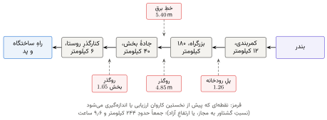
مثال 31.2 (دهانهٔ بلند، گشتاورِ بیشتر) پرسش. کاروانِ ناسل از کدام پلها میگذرد؟
پاسخ. فقط از پلِ کوتاهِ کانال (0.81). پلِ رودخانه (1.26) و روگذرِ بخش (1.05) از گشتاورِ مجاز بیشترند.
تفسیر. گشتاور با دهانه بالا میرود. مهندسِ مالکِ پل تصمیم میگیرد: ارزیابیِ ظرفیتِ واقعی، تقویت، پلِ موقت یا مسیرِ دیگر. این کار ماهها پیش از نخستین کاروان است، نه روزِ حمل. وارسی: \(2{,}280 \times (32/4 - 24/8) = 11{,}400\,\text{kN m}\) و \(11{,}400/9{,}000 = 1.27\).
31.2.4 ارتفاعهای آزاد
height on the route (loaded height = deck + load)
point clearance m nacelle 4.30 section 1 4.50
power line at km 205 5.40 +0.80 +0.60
overpass at km 214 4.85 +0.25 +0.05
the power line has margin but is live: its owner sets the
safe distance and may lift or de-energise it; the overpass
leaves 5 cm for the base section (ch 30) - measured, not
read from a map, before the first load leaves the portایده. ارتفاعِ باردار برابرِ کفِ تریلی بهاضافهٔ بار است. روگذرِ 4.85 m برای بخشِ پایهٔ 4.50 m روی کفِ 0.30 m فقط 5 cm حاشیه میگذارد (مثال 30.28). خطِ برق حاشیه دارد اما برقدار است. مالکش فاصلهٔ ایمن را تعیین میکند و شاید آن را بالا ببرد یا بیبرق کند. هر دو اندازهگیری میشوند، نه از نقشه خوانده.
31.2.5 زمانِ کاروان و پنجرهٔ مجوز
convoy time port to site (teaching speeds and three stops)
port to ring road 12 km at 25 km/h: 0.5 h
highway 180 km at 50 km/h: 3.6 h
district road 40 km at 30 km/h: 1.3 h
village bypass 6 km at 10 km/h: 0.6 h
site track 6 km at 10 km/h: 0.6 h
total 244 km in about 9.6 h with stops
permits often allow abnormal loads only at night or off
peak: a trip longer than the night window needs a planned
parking place - with security and space for the trailer31.2.6 ترتیبِ تحویل و برپایی
delivery and erection sequence of one turbine (teaching days)
day 0 crane pad and hardstand accepted (ch 29)
day 3 tower sections 1-4 delivered and stored
day 4 base section set, anchor bolts (ch 30)
day 6 sections 2-4 erected and bolted
day 7 nacelle delivered just in time, lifted
day 7 hub and three blades delivered
day 8 rotor assembled on the ground, lifted
day 10 mechanical completion checks
the nacelle comes just in time: stored on site it needs
space, a crane to move it and protection; a late nacelle
leaves a bare tower overnight (vortex shedding, ch 30)مثال 31.3 (ناسلِ بهموقع) پرسش. چرا ناسل درست در روزِ بالابری میرسد و زودتر انبار نمیشود؟
پاسخ. ناسلِ انبارشده جا، جرثقیلی برای جابهجایی و حفاظت از رطوبت و گرد و خاک میخواهد. ناسلِ دیررس هم برجِ بیناسل را شب تنها میگذارد، که مسئلهٔ ریزشِ گردابه است (مثال 30.3).
تفسیر. ترتیبِ تحویل میانِ این دو خطر تنظیم میشود: بخشهای برج چند روز زودتر، ناسل بهموقع، و روتور پس از ناسل. برنامهٔ تحویل با برنامهٔ جرثقیل و پیشبینیِ هوا (بخش 31.3.5) هماهنگ میشود. وارسی: ده روز برای هر توربین در جدول.
- کدام بار شعاعِ پیچ، کدام ارتفاعِ آزاد و کدام بارِ پل را تعیین میکند؟
- بارِ هر محور برای 124 t روی ۱۴ محور با تریلیِ 34 t و سهمِ 5 % کشنده چقدر است؟
- چرا محورِ بیشتر مسئلهٔ پیچها را بدتر میکند؟
- گشتاورِ بارِ نقطهایِ 1,000 kN روی دهانهٔ 16 m چقدر است؟
- چرا گشتاورِ پل با دهانه بالا میرود؟
- حاشیهٔ ارتفاعِ ناسلِ 4.30 m زیرِ روگذرِ 4.85 m چقدر است؟
- چرا خطِ برقِ پرحاشیه هم هماهنگی با مالکش را میخواهد؟
- اگر مجوز فقط شبها حمل را مجاز کند و سفر 9.6 ساعت باشد، چه لازم است؟
31.2.7 بندر، انبار و هزینهٔ معطلی
برنامه:
python -m companion.ch31.examples_fstorage at the port and demurrage (teaching tariff)
free storage 21 days, then 0.5 k u a turbine set a day
sets on the ship sets leaving a week last set waits d storage k u
6 3 7 0.0
12 2 35 21.0
12 1 77 126.0
the port is cheap while the convoys keep pace with the
ships; a slow permit, a bridge closed for assessment or
a long wait for a lifting window backs the queue into
the port, where each set costs money every day - the
delivery schedule couples the ship, the road and the hookمثال 31.4 (صف به بندر برمیگردد) پرسش. اگر از دوازده دستِ توربینِ یک کشتی فقط یکی در هفته از بندر خارج شود، هزینهٔ انبار چقدر است؟
پاسخ. حدودِ 126 k u. آخرین دست 77 روز منتظر میماند. با دو دست در هفته 21 k u است.
تفسیر. بندر تا وقتی ارزان است که کاروانها با کشتیها همگام باشند. مجوزِ کند، پلی که برای ارزیابی بسته است، یا انتظارِ طولانی برای پنجرهٔ بالابری صف را به بندر برمیگرداند. آنجا هر دست هر روز هزینه دارد. برنامهٔ تحویل کشتی، راه و قلاب را به هم گره میزند (بخش 31.2.6). تعرفهٔ واقعی را بندر میدهد. وارسی: جمعِ روزهای بیش از ۲۱ روز \(= 252\) و \(252 \times 0.5 = 126\).
31.2.8 بستنِ راه برای کاروانها
road closures for the abnormal convoys (teaching)
stretch closed per convoy min convoys total h
village bypass (rolling block) 25 108 45
district road junctions 15 108 27
highway on-ramp 10 108 18
45 hours of closure at the village spread over months: the
community hears the timetable in advance (night moves,
school runs avoided), the police escort and the road
authority set the rules (U-106), and complaints reach the
grievance mechanism of ch 32ایده. حدودِ ۴۵ ساعت بستنِ راه در کنارِ روستا، در طولِ چند ماه، کم نیست. جامعه برنامهٔ زمانی را از پیش میشنود: حرکتِ شبانه و پرهیز از ساعتِ مدرسه. اسکورتِ پلیس و مرجعِ راه قاعدهها را تعیین میکنند (U-106). شکایتها هم به سازوکارِ شکایتِ فصلِ ۳۲ میرسند.
31.2.9 هزینهٔ لجستیکِ یک توربین
logistics cost of one turbine (teaching, k u)
sea freight share (blades, nacelle, tower) 210 25 %
port handling and storage 35 4 %
road transport, 9 abnormal loads 160 19 %
escorts, permits, route works 55 7 %
main crane and assist cranes 345 42 %
receiving, preservation, laydown 25 3 %
total 830 k u a turbine
the crane is the biggest single item: the days it waits
for wind, for a late delivery or for a pad to be accepted
are where logistics budgets are lost (lab D)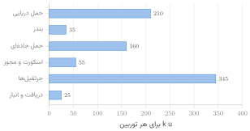
مثال 31.5 (جرثقیل، بزرگترین قلم) پرسش. بزرگترین قلمِ هزینهٔ لجستیکِ یک توربین چیست؟
پاسخ. جرثقیلِ اصلی و کمکی، با حدودِ 42 % از 830 k u.
تفسیر. روزهایی که جرثقیل منتظرِ باد، تحویلِ دیرکرده یا پذیرشِ سکو میماند، جایی است که بودجهٔ لجستیک از دست میرود (بخش 31.5.2). کاهشِ این روزها، با سکوی آماده، تحویلِ بهموقع و برنامهریزی با فصل، از چانهزنی بر سرِ نرخِ روزانه مؤثرتر است. وارسی: \(345/830 = 42\,\%\).
31.2.10 سوختِ کارزار
diesel for the erection campaign (teaching consumptions)
main crane 900, assist crane 250, generators 300 L a day; 156 crane days
total 226 m3 of diesel; 8 tanker loads of 30 m3
CO2 at 2.7 kg/L: about 611 t
fuel is a logistics stream of its own: a bunded store on
site, a delivery schedule, spill kits and a refuelling
procedure - and an environmental permit item (ch 33)سوخت خودش یک جریانِ لجستیکی است: انبارِ دیوارهدار در ساختگاه، برنامهٔ تحویل، تجهیزاتِ مهارِ نشت و روالِ سوختگیری. انبارِ سوخت یکی از قلمهای مجوزِ محیطِ زیستی است (فصلهای ۲۹ و ۳۳).
31.2.11 جاروبِ نوکِ پره در پیچ
برنامه:
python -m companion.ch31.examples_g
python -m companion.ch31.examples_hایده. پرهٔ 74 m روی تریلیِ کشویی بخشی از طولش را پشتِ بوژیِ عقب دارد. در پیچی به شعاعِ \(R\)، نوکِ پره با فاصلهٔ آویختگیِ \(a\) روی دایرهای بزرگتر حرکت میکند:
\[ R_\text{tip} = \sqrt{R^2 + a^2} \tag{31.3}\]
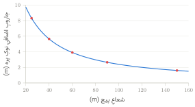
sweep of the blade tip outside the rear bogie's path in a bend
rear overhang 22 m (74 m blade on an extendable trailer)
bend radius m tip radius m extra sweep m
25 33.3 8.3
40 45.7 5.7
60 63.9 3.9
90 92.6 2.6
150 151.6 1.6
in a tight bend the tip swings several metres outside the
road: signs, poles, walls and trees in that zone are
removed or the blade is lifted on a tilting adaptor - the
swept-path study of each bend comes before the permitمثال 31.6 (هشت متر بیرون از راه) پرسش. در پیچی به شعاعِ 25 m نوکِ پره چقدر بیرون از مسیرِ بوژی میرود؟
پاسخ. حدودِ 8.3 m. در شعاعِ 90 m حدودِ 2.6 m.
تفسیر. تابلوها، تیرها، دیوارها و درختهای این ناحیه برداشته میشوند، یا پره روی مبدلِ کجکننده بالا برده میشود. مطالعهٔ مسیرِ جاروبِ هر پیچ پیش از مجوز انجام میشود (فصلِ ۲۹ برای عریضکردنِ پیچها). وارسی: \(\sqrt{25^2 + 22^2} - 25 = 8.3\,\text{m}\).
31.2.12 نیروی کشش در سربالایی
ایده. برای بالا بردنِ وزنِ کلِ \(m\) روی شیبِ \(\theta\) با ضریبِ مقاومتِ غلتشیِ \(C_\text{rr}\)، نیروی کشش چنین است:
\[ F = m\,g\,(\sin\theta + C_\text{rr}\cos\theta) \tag{31.4}\]
pull needed to climb with the nacelle (gross 232 t, teaching)
grade % pull kN tractors at 300 kN (incl. a pusher)
0 46 1
4 136 1
8 227 1
12 316 2
each 4 % of grade adds about 90 kN - a third of a tractor;
at 12 % a pusher unit is needed: the steep stretches of
ch 29's roads get a pusher, gravel for grip, or a
gentler alignment - and wet
gravel halves the grip a driven axle can use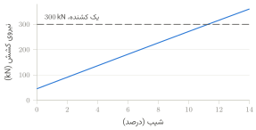
31.2.13 پره در بادِ جانبی
a blade on its trailer in a crosswind (teaching)
side area 133 m2 at 4 m; blade + trailer 52 t; track 3 m
gust m/s wind force kN tipping moment / restoring
15 21.6 0.11
20 38.4 0.20
25 59.9 0.31
30 86.3 0.45
even a 30 m/s gust gives under half the restoring moment:
the load does not tip, but it sways and steers badly long
before - the convoy's wind limit is set for control, and
the plan names a place to park and waitایده. پرهٔ بلند و سبک روی تریلی سطحِ جانبیِ بزرگی دارد. حتی تندبادِ 30 m/s کمتر از نصفِ گشتاورِ بازگرداننده را میسازد و بار واژگون نمیشود. اما بار خیلی زودتر تاب میخورد و فرمان را سخت میکند. پس حدِ بادِ کاروان برای کنترل تعیین میشود و برنامه جای توقف و انتظار را نام میبرد.
31.2.14 مهارِ ناسل روی تریلی
lashing the nacelle on its trailer (teaching accelerations)
design accelerations: 0.8 g forward, 0.5 g sideways, 0.5 g back
direction force kN friction 0.3 kN lashings to hold (100 kN each)
forward 1256 471 10
sideways 785 471 4
backward 785 471 4
braking hard loads the lashings most: friction alone holds
less than half - the maker's lashing points, chain or
bolted fixtures and a check after the first kilometres
belong to the transport plan, with the accelerations of
the applicable load-securing rulesمثال 31.7 (ترمزِ شدید) پرسش. در ترمزِ شدید چه نیرویی ناسل را به جلو میبرد و اصطکاک چقدرش را نگه میدارد؟
پاسخ. حدودِ 1,256 kN با شتابِ 0.8 g. اصطکاک فقط 471 kN را نگه میدارد و بقیه بر عهدهٔ مهارهاست.
تفسیر. نقطههای مهارِ سازنده، زنجیر یا اتصالهای پیچی، و وارسی پس از نخستین کیلومترها بخشی از برنامهٔ حملاند. شتابهای طرح از قاعدههای مهارِ بارِ کاربردپذیر میآیند. عددهای این درس آموزشیاند. وارسی: \(160 \times 9.81 \times 0.8 = 1{,}256\,\text{kN}\).
31.2.15 ظرفیتِ مسیر در پنجرهٔ شبانه
convoys a week through a night-only permit (teaching)
window 7 h a night; trip 9.6 h -> nights per convoy: 2
parking places convoys moving at once convoys a week
1 1 3.5
2 2 7.0
3 3 10.5
108 loads at 3.5 a week take about 31 weeks; three
parking places bring it near 10 a week - but only if the
escort, the road authority and the crane keep pace:
the route's capacity, not the ship, sets the campaignایده. اگر مجوز فقط حرکتِ شبانه را اجازه دهد و سفر طولانیتر از یک شب باشد، هر کاروان دو شب و یک جای توقف میخواهد. شمارِ جاهای توقف ظرفیتِ مسیر را تعیین میکند. ظرفیتِ مسیر، نه کشتی، طولِ کارزار را میسازد، به شرطِ آنکه اسکورت، مرجعِ راه و جرثقیل همگام باشند (مثال 31.4).
31.2.16 گمرک: اسناد و زمانِ ترخیص
برنامه:
python -m companion.ch31.examples_kایده. محموله با مجموعهای از اسناد سفر میکند. اگر یکی از آنها کم یا ناسازگار باشد، کلِ محموله در بندر میماند. قاعدههای گمرکی در هر کشور فرق دارد. ترخیص را کارگزارِ حمل و کارگزارِ گمرک انجام میدهند و این کتاب هیچ قاعدهٔ کشوری را فرض نمیکند (فصلهای ۵۵ تا ۵۷).
documents a turbine shipment travels with (typical, not a rule)
document issued by what it shows
commercial invoice seller value and terms of sale
packing list seller pieces, masses, dimensions
bill of lading carrier title to the goods at sea
certificate of origin chamber / seller where it was made
import licence or permit importer if the item needs one
insurance certificate insurer cover in transit
maker's certificates maker type tests, dangerous goods
one missing or inconsistent document holds the whole
shipment at the port: the forwarder checks the set before
the ship sails, and a battery's dangerous-goods papers
(ch 19) travel with it - the country's rules decide the
rest (ch 55-57)customs clearance time at the port (Monte Carlo, teaching)
median 5 days; 8 % of shipments queried (+5-20 days)
P50 5.3 days, P90 12.2 days
clearance alone longer than the 21 free days: 2.4 %
clearance plus a 2-week convoy queue over 21 days: 31 %
clearance eats into the free storage before the first
convoy moves: documents prepared before arrival, a broker
appointed and the convoy queue planned from the P90, not
the median, keep the port bill small (lesson A)مثال 31.8 (برنامه با صدکِ ۹۰ام) پرسش. اگر ترخیص و صفِ دوهفتهایِ کاروان با هم حساب شوند، چند درصد محمولهها از ۲۱ روزِ انبارِ رایگان میگذرند؟
پاسخ. حدودِ 31 %. ترخیص بهتنهایی فقط در حدودِ 2 % موارد از ۲۱ روز میگذرد. میانه حدودِ پنج روز است و صدکِ ۹۰ام حدودِ دوازده روز.
تفسیر. ترخیص پیش از حرکتِ نخستین کاروان از انبارِ رایگان میخورد. اسنادی که پیش از رسیدنِ کشتی آماده شدهاند، کارگزاری که از پیش انتخاب شده، و صفِ کاروانی که با صدکِ ۹۰ام برنامهریزی شده هزینهٔ بندر را کم نگه میدارند (مثال 31.4). اسنادِ کالای خطرناک برای باتریها هم همراهِ آنهاست (فصلِ ۱۹). وارسی: صدکِ ۹۰ام 12.2 روز و \(12.2 + 14 > 21\).
31.3 ب. حاکمیتِ برنامهریزیِ بالابری
هر بالابری یک طرحِ بالابری دارد که افرادِ صلاحیتدار مینویسند و امضا میکنند. ردهٔ بالابری تعیین میکند چه کسی. این بخش منطقِ آن طرح را نشان میدهد: ظرفیت از جدولِ بارِ جرثقیل، ردهبندی، زمینِ زیرِ جرثقیل، باد روی بار و پنجرههای هوا. جدولِ بار و حدهای باد آموزشیاند (A-365). طرحِ مصوب جدولِ خودِ جرثقیل، دستورِ بالابریِ سازنده و بازبینیِ مهندسِ بالابری را به کار میبرد.
برنامه:
python -m companion.ch31.examples_b31.3.1 ظرفیت از جدولِ بار
ایده. ظرفیتِ جرثقیل یک عدد نیست، تابعی از شعاع است. با شعاعِ بیشتر، گشتاورِ واژگونیِ جرثقیل بالا میرود و ظرفیت پایین میآید. بهرهوری، یعنی بار بهاضافهٔ ملزومات تقسیم بر ظرفیتِ همان شعاع، معیارِ نخستِ طرح است:
\[ u = \frac{m_\text{load} + m_\text{rig}}{C(r)} \tag{31.5}\]
def chart_capacity(radius_m: float, chart: list[tuple[float, float]]) -> float:
"""Capacity (t) at a radius by straight-line interpolation of a load
chart [(radius m, capacity t)], zero beyond its last radius."""
r = np.array([p[0] for p in chart])
c = np.array([p[1] for p in chart])
if radius_m > r[-1]:
return 0.0
return float(np.interp(radius_m, r, c))
def lift_utilisation(load_t: float, rigging_t: float, radius_m: float,
chart: list[tuple[float, float]]) -> float:
"""(load + rigging) / chart capacity at the radius."""
cap = chart_capacity(radius_m, chart)
return math.inf if cap == 0 else (load_t + rigging_t) / cap
def wind_on_load(v: float, area_m2: float, cd: float = 1.2,
rho: float = 1.225) -> float:
"""Wind force on a suspended load (N)."""
return 0.5 * rho * v * v * cd * area_m2lifts against the teaching load chart (capacity at 112 m hook height)
lift load+rig t radius m capacity t use
tower section 1 130 14 230 0.57
tower section 4 54 18 194 0.28
nacelle 168 16 210 0.80
rotor (hub + blades) 120 20 178 0.67
main transformer onto plinth 78 12 250 0.31
the nacelle uses four fifths of the crane at 16 m: a
metre more radius takes capacity away fast - the radius
is fixed by the crane's position on the pad, which is
why the pad and the crane's set-up are surveyed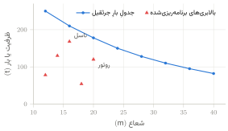
مثال 31.9 (یک متر شعاع) پرسش. ناسل در شعاعِ 16 m چه بهرهوریای دارد و در 17 m چه؟
پاسخ. 0.80 در 16 m و 0.83 در 17 m.
تفسیر. یک متر شعاعِ بیشتر بهرهوری را از مرزِ ردهٔ «بحرانی» عبور میدهد. شعاع را جای جرثقیل روی سکو تعیین میکند. پس سکو و استقرارِ جرثقیل نقشهبرداری میشوند و طرح با شعاعِ اندازهگیریشده بسته میشود. وارسی: ظرفیت در 17 m برابرِ \(210 - 0.25 \times 32 = 202\,\text{t}\) است و \(168/202 = 0.83\).
31.3.2 ردهبندیِ بالابری و تأییدکننده
lift classification (teaching rules: critical if use > 0.8, tandem,
or near live parts; complex if use > 0.6; otherwise routine)
lift use class approved by
tower section 1 0.57 critical lift engineer + site manager
tower section 4 0.28 routine crane supervisor
nacelle 0.80 complex appointed person (lifts)
rotor (hub + blades) 0.67 critical lift engineer + site manager
main transformer onto plinth 0.31 critical lift engineer + site manager
the class decides who writes and who signs the lift plan;
a tandem lift or a lift near live equipment is critical
whatever its utilisation - the rules are the project's
lifting procedure, not this tableایده. ردهٔ بالابری از بهرهوری و شرایط میآید. بالابریِ دوجرثقیله، بالابری نزدیکِ تجهیزاتِ برقدار، یا بهرهوریِ بالا «بحرانی» است و طرحِ مکتوب با امضای مهندسِ بالابری میخواهد. قاعدههای واقعی در روالِ بالابریِ پروژه است. جدولِ اینجا فقط نشان میدهد هر قاعده چه چیزی را تغییر میدهد: چه کسی مینویسد و چه کسی امضا میکند.
31.3.3 زمینِ زیرِ جرثقیل
the crawler crane on its pad (teaching masses; two tracks 1.5 x 12 m)
crane 600 t, counterweight 250 t, nacelle with rigging 168 t
average track pressure 277 kPa; under the loaded track edge about 555 kPa
timber or steel mats spread the edge pressure; the pad
(ch 29) was checked for one outrigger load - the crawler
case is checked again with the crane maker's ground-
bearing data and the pad's tested bearing (ch 30, ch 29)ایده. جرثقیلِ زنجیری با وزنهٔ تعادل و بار فشاری میانگین روی زنجیرها میگذارد. زیرِ لبهٔ زنجیرِ بارخورده این فشار حدودِ دو برابر میشود. تشکها آن را پخش میکنند و سکوی فصلِ ۲۹ برای همین حالت دوباره وارسی میشود، با دادهٔ فشارِ زمینِ سازندهٔ جرثقیل و ظرفیتِ آزمودهشدهٔ سکو.
31.3.4 باد روی بارِ آویخته
ایده. بارِ آویخته بادبان است: \(F = \tfrac12\rho v^2 C_\text{d} A\). روتورِ مونتاژشده سطحی چندصدمترمربعی دارد و در بادِ ملایم هم نیروی جانبیِ بزرگی میگیرد. بار میچرخد و تاب میخورد.
wind force on the suspended load (Cd 1.2; teaching areas)
load area m2 6 m/s 8 m/s 10 m/s 12 m/s (kN)
nacelle (side) 60 1.6 2.8 4.4 6.4
rotor in its plane 555 14.7 26.1 40.8 58.7
tower section 112 3.0 5.3 8.3 11.9
the rotor is a sail: at 8 m/s it is pushed about twice as
hard as a tower section in a 12 m/s wind -
hence the low wind limits for rotor and blade lifts and
the tag lines that keep the load from turning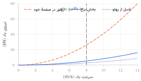
31.3.5 پنجرههای هوا
ایده. هر بالابری یک پنجرهٔ هوا میخواهد: چند ساعتِ پیاپی با باد زیرِ حدِ سازنده. سالِ ساعتیِ داده نشان میدهد این پنجرهها چند بار و با چه فاصلهای پیش میآیند:
weather windows in the data-pack year (hub-height wind; teaching limits)
lift limit hours windows/yr worst month longest wait h
tower section 12 4 1917 12 (119) 71
nacelle 10 6 1050 12 ( 61) 135
rotor (hub + blades) 8 8 572 5 ( 32) 214
single blade 8 4 1254 12 ( 72) 137
even the worst month has dozens of windows; what costs
money is the wait - the rotor lift can stand idle for
nine days (214 h) when a windy spell sets in: erection is planned
around the season, and a waiting crane costs every day
it stands (lab D)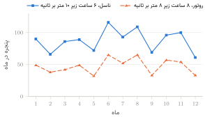
مثال 31.10 (انتظار، نه تعداد) پرسش. روتور در سال چند پنجره دارد و بدترین انتظار برایش چقدر است؟
پاسخ. 572 پنجرهٔ ۸ ساعته در سال و حتی 32 پنجره در بدترین ماه. اما طولانیترین انتظار 214 ساعت است، حدودِ نه روز.
تفسیر. هزینه را تعدادِ پنجرهها نمیسازد، انتظار میسازد: یک دورهٔ بادی جرثقیل و تیم را روزها بیکار نگه میدارد. برپایی با فصل برنامهریزی میشود و قرارداد میگوید چه کسی هزینهٔ انتظار را میدهد (بخش 31.5.2). وارسی: \(214/24 = 8.9\) روز.
این بخش طرحِ بالابری نیست. هر بالابری با طرحِ مصوب، جرثقیلِ بازرسیشده، اپراتور و راهنمای دارای صلاحیت، ناحیهٔ ممنوع، و قاعدهٔ توقف در باد انجام میشود (فصلهای ۳۲ و ۴۹).
- چرا ظرفیتِ جرثقیل با شعاع کم میشود؟
- ظرفیت در 22 m از جدولِ آموزشی چقدر است؟
- بهرهوریِ 129 t در 20 m چیست؟
- چه چیزی بالابری را «بحرانی» میکند حتی با بهرهوریِ کم؟
- چرا فشارِ زیرِ لبهٔ زنجیر از فشارِ میانگین بیشتر است؟
- نیروی بادِ 10 m/s روی 60 m² با \(C_\text{d} = 1.2\) چقدر است؟
- چرا روتور حدِ بادِ کمتری از بخشِ برج دارد؟
- چرا انتظار، و نه تعدادِ پنجرهها، هزینه را تعیین میکند؟
31.3.6 جابهجاییِ جرثقیلِ اصلی میانِ سکوها
moving the main crawler crane to the next pad (teaching)
distance m walk h (0.5 km/h + mats) dismantle-move-rebuild h
400 1.8 61
600 2.7 61
900 4.0 62
1500 6.8 63
walking on a prepared track is far quicker up to about a
kilometre, but it needs the track built for the crane's
ground pressure, a gentle slope and no overhead line -
the layout of ch 14 and the roads of ch 29 decide which
pads are 'walkable'; the others cost two and a half daysایده. جرثقیلِ زنجیری تا حدودِ یک کیلومتر روی مسیرِ آماده بسیار زودتر راه میرود تا اینکه پیاده، جابهجا و دوباره سوار شود. اما مسیر باید برای فشارِ زمینِ جرثقیل ساخته شده باشد (بخش 31.3.3)، شیبِ ملایم داشته باشد و زیرِ خطِ برق نباشد. چیدمانِ فصلِ ۱۴ و راههای فصلِ ۲۹ تعیین میکنند کدام سکوها «پیادهرفتنی»اند. بقیه دو روز و نیم هزینه دارند.
31.3.7 یک جرثقیلِ اصلی یا دو تا
one main crane or two? (12 turbines, teaching day rates)
cranes campaign days crane cost k u earlier energy k u net k u
1 156 4,704 0 4,704
2 78 4,884 1,025 3,859
a second crane costs little more - the same crane-days and
one more mobilisation - and halves the campaign; it pays
only if the energy brought forward is real: the grid
connection date (no export before it), a second erection
crew and the weather decide - the schedule model (ch 22,
49), not this table aloneمثال 31.11 (روزِ جرثقیل همان، کارزار نصف) پرسش. جرثقیلِ دوم هزینه را چقدر بالا میبرد و چه چیزی آن را توجیه میکند؟
پاسخ. فقط هزینهٔ یک آمادهسازیِ دیگر را اضافه میکند: 4,884 در برابرِ 4,704 k u. روزهای جرثقیل یکسان است و کارزار از 156 به 78 روز میرسد.
تفسیر. انرژیِ زودتر، حدودِ 1,025 k u در این جدول، فقط وقتی واقعی است که اتصال به شبکه آماده باشد. پیش از آن صادراتی نیست. گروهِ برپاییِ دوم و هوا هم تصمیم را شکل میدهند. این تصمیمِ مدلِ برنامهٔ زمانی است (فصلهای ۲۲ و ۴۹)، نه فقط این جدول. وارسی: \(2 \times 180 + 78 \times 2 \times 29 = 4{,}884\).
31.3.8 زاویهٔ شاخههای اسلینگ
ایده. در اسلینگِ دوشاخه با زاویهٔ \(\alpha\) میانِ دو شاخه، کششِ هر شاخه چنین است:
\[ T = \frac{W}{2\cos(\alpha/2)} \tag{31.6}\]
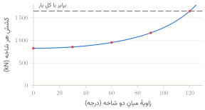
tension in each leg of a two-leg sling (168 t, teaching)
angle between legs deg tension per leg kN factor
0 824 1.00
30 853 1.04
60 952 1.15
90 1,165 1.41
120 1,648 2.00
at 120 degrees each leg carries the whole load: wide
angles also squeeze the load - which is why nacelles lift
on a spreader beam or the maker's lifting yoke, never on
slings chosen on siteدر ۱۲۰ درجه هر شاخه کلِ بار را میکشد. زاویهٔ باز بار را هم فشار میدهد. به همین دلیل ناسل با تیرِ پخشکننده یا یوغِ بالابریِ سازنده بالا میرود، نه با اسلینگی که در ساختگاه انتخاب شود.
31.3.9 بالابریِ ستارهای یا تکپره
rotor-star lift or three single-blade lifts? (data-pack year)
method window needed windows a year lifts each
rotor star 8 h below 8 m/s 572 1
single blade 4 h below 10 m/s 1634 3
single-blade lifts need shorter, windier windows, and so
find many more of them; they avoid the ground assembly of
the rotor but need the maker's blade yoke and three
lifts - which one the maker's method allows comes firstمثال 31.12 (پنجرههای کوتاهتر، بیشتر) پرسش. در سالِ داده چند پنجرهٔ مناسب برای بالابریِ ستارهای و چند تا برای تکپره هست؟
پاسخ. 572 پنجرهٔ ۸ ساعته زیرِ 8 m/s برای روتورِ کامل و 1,634 پنجرهٔ ۴ ساعته زیرِ 10 m/s برای تکپره. با حدِ 8 m/s که جدولِ پنجرههای بخش 31.3.5 برای تکپره به کار برد، 1,254 پنجره است؛ حدِ باد را دستورِ بالابریِ سازنده تعیین میکند.
تفسیر. بالابریِ تکپره پنجرههای کوتاهتر و بادیتری میخواهد و بسیار بیشتر از آنها پیدا میکند. مونتاژِ روتور روی زمین هم لازم نیست، اما یوغِ پرهٔ سازنده و سه بالابری لازم است. اول باید دید روشِ سازنده کدام را مجاز میداند (بخش 31.3.5). وارسی: \(1{,}634/3 = 545\) روتور در برابرِ 572.
31.3.10 زمانِ کششدادنِ پیچهای فلنج
time to tension a tower flange (teaching rates)
tools min a bolt (2 passes) hours a flange
1 6 12.0
2 6 6.0
4 6 3.0
with one tool a flange takes about 12 hours: the top
section, its bolting and the nacelle in one day need
four tools and a crew for each - or the bare tower stands
overnight in the vortex wind (ch 30), within the maker's
procedure and its wind limitایده. با یک ابزار، کششدادنِ یک فلنج حدودِ ۱۲ ساعت طول میکشد. اگر بخشِ بالایی، پیچهایش و ناسل باید در یک روز نصب شوند، چهار ابزار و برای هر کدام یک گروه لازم است. در غیرِ این صورت برجِ برهنه شب در بادِ ریزشِ گردابه میماند (فصلِ ۳۰)، که فقط در چارچوبِ روالِ سازنده و حدِ بادش مجاز است.
31.3.11 کشیدنِ کابل در کانال
ایده. در هر خمِ کانال، اصطکاک کشش را چند برابر میکند. این معادلهٔ کاپستان است:
\[ T_\text{out} = T_\text{in}\,e^{\mu\theta} \tag{31.7}\]
در این رابطه \(\mu\) ضریبِ اصطکاک است و \(\theta\) زاویهٔ خم به رادیان.
pulling a 33 kV cable through a duct run (capstan equation)
T_out = T_in exp(mu theta) at each bend; friction mu 0.35 (teaching)
allowed pull on the conductors: 48 kN (40 N/mm2 x 3 x 400 mm2)
route pull at the end kN
300 m straight 10.3
300 m, two 90 deg bends 19.7
300 m, four 90 deg bends 41.1
500 m, four bends 68.5 OVER
each 90 degree bend multiplies the pull by 1.7, so bends
and length together end a pull - the duct route is drawn with
few bends, and joint bays placed where the pull would
exceed the cable maker's limit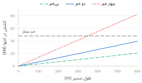
مثال 31.13 (خمها و طول با هم) پرسش. آیا مسیرِ 500 m با چهار خمِ ۹۰ درجه را میتوان یکجا کشید؟
پاسخ. نه. کشش به 68.5 kN میرسد و حدِ مجاز 48 kN است. همان مسیر با 300 m به 41 kN میرسد.
تفسیر. هر خمِ ۹۰ درجه کشش را حدودِ 1.7 برابر میکند. پس مسیرِ کانال با خمِ کم کشیده میشود و اتاقکِ مفصل جایی گذاشته میشود که کشش از حدِ سازندهٔ کابل بگذرد (فصلِ ۲۴). وارسی: \(e^{0.35\pi/2} = 1.73\).
31.3.12 شعاعِ خمشِ کابل روی قرقره
the bend radius a 33 kV cable must keep (teaching 15 x D)
cable 75 mm -> minimum bend radius 1.12 m (12 x D once laid)
drum barrel m radius m ok?
1.6 0.84 NO
2.0 1.04 NO
2.4 1.24 yes
a drum too small for the cable damages the insulation
before it leaves the yard; the cable maker states the
drum, the pulling limits and the bend radius - receiving
inspection checks the drum against that sheet (lesson C)قرقرهای کوچکتر از اندازهٔ کابل عایق را پیش از آنکه از انبار بیرون برود آسیب میزند. سازندهٔ کابل قرقره، حدهای کشش و شعاعِ خمش را مشخص میکند. بازرسیِ دریافت قرقره را با همان برگه مقایسه میکند (بخش 31.4.1).
31.3.13 سُراندنِ ترانسفورماتور روی پلینت
skidding the main transformer onto its plinth (72 t, oil out)
skid surface friction pull kN
greased steel on steel 0.10 71
PTFE pads 0.05 35
dry steel on steel 0.25 177
jacks lift it on its jacking points, skid beams carry it
over, and a pull of a few tens of kN moves it - slowly,
with a restraint on the other side; the maker's
drawings fix the jacking and lashing points and the
impact recorder is read before and after (lesson C)جکها ترانسفورماتور را روی نقطههای جکزنی بالا میبرند و تیرهای سُرانش آن را جابهجا میکنند. کششِ چند ده کیلونیوتنی آن را آرام حرکت میدهد و مهاری در سوی دیگر نگهش میدارد. نقشههای سازنده نقطههای جکزنی و مهار را تعیین میکنند. ضربهنگار پیش و پس از جابهجایی خوانده میشود (مثال 31.14).
- جاروبِ اضافیِ نوکِ پره در پیچی به شعاعِ 60 m چقدر است؟
- نیروی کشش برای 232 t روی شیبِ 6 % چقدر است؟
- چرا حدِ بادِ کاروان برای کنترل است و نه واژگونی؟
- چرا اصطکاک بهتنهایی ناسل را در ترمز نگه نمیدارد؟
- کششِ هر شاخه در زاویهٔ ۹۰ درجه برای 168 t چقدر است؟
- چرا بالابریِ تکپره پنجرههای بیشتری پیدا میکند؟
- کشش پس از دو خمِ ۹۰ درجه با ضریبِ 0.35 چند برابر میشود؟
- کمینهٔ شعاعِ خمشِ کابلی به قطرِ 60 mm با قاعدهٔ ۱۵ برابر چقدر است؟
31.4 پ. دریافت و نگهداری
تجهیزات از لحظهٔ رسیدن تا نصب در خطرند: ضربهٔ حمل، رطوبت، گرد و خاک، دستِ کسی که جابهجایش میکند، و زمان. این بخش زنجیرهٔ دریافت را دنبال میکند: بازرسیِ دریافت، گزارشِ آسیب، فضای انبار، نگهداری و زنجیرهٔ تحویل. همهٔ اینها شرطِ ضمانتاند. عددها آموزشیاند (A-366).
برنامه:
python -m companion.ch31.examples_c31.4.1 بازرسیِ دریافت
receiving inspection: what is checked before the driver leaves
[ ] shock and tilt indicators read nacelle, transformer
[ ] packing intact, seals and desiccant bags all packed items
[ ] visible damage photographed before unloading all loads
[ ] blade leading edge and tip protection blades
[ ] transformer impact recorder downloaded main transformer (ch 25)
[ ] serial numbers against the packing list all loads
[ ] documents: certificates, preservation log all loads
a damage noted while the driver is there is a transport
claim; found a week later it is the project's problem - so
the inspection happens at unloading, with photographs31.4.2 گزارشهای آسیب
damage reports during the delivery campaign (synthetic)
damage n k u each action
blade leading edge chip 4 3.0 repair on site by maker
tower flange scratch, coating 6 0.5 touch-up to coating spec
nacelle cover crack 1 8.0 maker's assessment
transformer impact over limit 1 40.0 maker's inspection, tests
cable drum flange broken 2 1.5 re-drum, test the cable
total about 66 k u; the transformer's impact alarm costs
the most because nothing can be energised until the maker
has inspected and tested it (ch 25, ch 50) - the recorder
is read before the transformer leaves the trailerمثال 31.14 (گرانترین آسیب، کوچکترین نشانه) پرسش. کدام آسیب در جدول گرانترین است و چرا؟
پاسخ. هشدارِ ضربهٔ ترانسفورماتور با حدودِ 40 k u، از کلِ حدودِ 66 k u.
تفسیر. ترانسفورماتوری که ضربهنگارش از حد گذشته، تا بازرسی و آزمونِ سازنده برقدار نمیشود (فصلهای ۲۵ و ۵۰). هزینه تأخیرِ کلِ پست است، نه تعمیرِ خودِ ترانسفورماتور. ضربهنگار پیش از پیادهکردن از تریلی خوانده میشود، چون پس از آن معلوم نیست ضربه کجا خورده. وارسی: \(4 \times 3 + 6 \times 0.5 + 8 + 40 + 2 \times 1.5 = 66\,\text{k u}\).
31.4.3 فضای انبار
laydown areas (footprints x 1.6 for aisles and handling, teaching)
one turbine's components: 2,265 m2 (blades dominate)
substation equipment and drums: 515 m2
four turbines staged at once plus the substation: 9,574 m2
the blades' 74 m length shapes the laydown more than any
area: they lie on cradles, aligned with the crane's reach
and the wind, on ground that drains (ch 29)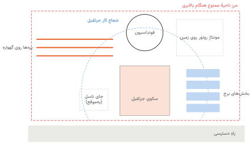
31.4.4 نگهداری و رطوبتگیر
desiccant for sealed packages (teaching rate 0.25 kg per m3 a month)
package volume m3 3 months kg 9 months kg
converter cabinet 12 9.0 27.0
switchgear panel 6 4.5 13.5
control cabinet 2 1.5 4.5
storage beyond the packing's design time needs fresh
desiccant, heaters or a dry store: the maker's storage
instruction is a warranty condition, and the record of
checks (dates, humidity cards, heaters on) is the proofایده. بستهٔ آببند با کیسهٔ رطوبتگیر برای مدتی معین طراحی شده است. انبارِ طولانیتر رطوبتگیرِ تازه، گرمکن یا انبارِ خشک میخواهد. دستورِ انبارِ سازنده شرطِ ضمانت است و سابقهٔ وارسیها، یعنی تاریخها، کارتهای رطوبت و روشنبودنِ گرمکن، شاهدِ رعایتش است.
31.4.5 زنجیرهٔ تحویل
chain of custody: signed hand-overs per item (synthetic log)
item hand-overs signed expected gap
nacelle N-07 5 5
transformer TR-1 4 5 YES
blade B-21 3 4 YES
drum D-33 (33 kV) 4 5 YES
converter C-12 3 4 YES
4 items with a missing hand-over: whoever held the item
then is unknown - a damage found later cannot be placed;
every hand-over is signed by the giver and the takerمثال 31.15 (امضای جاافتاده) پرسش. چهار قلم یک تحویلِ امضانشده دارند. چه پیامدی دارد؟
پاسخ. معلوم نیست قلم در آن بازه دستِ چه کسی بوده است. آسیبی که بعدتر پیدا شود را نمیتوان به جایی نسبت داد، نه به حملکننده و نه به انبار.
تفسیر. هر تحویل را دهنده و گیرنده با هم امضا میکنند، با تاریخ، حالت و عکس اگر لازم باشد. این همان ردیابیِ فصلهای ۳۰ و ۴۰ است، این بار برای جابهجایی بهجای ساخت. وارسی: چهار ردیف با «YES» در ستونِ شکاف.
- چرا بازرسیِ دریافت پیش از رفتنِ راننده انجام میشود؟
- ضربهنگارِ ترانسفورماتور چه زمانی خوانده میشود و چرا؟
- فضای انبارِ سه پره با ضریبِ 1.6 چقدر است؟
- رطوبتگیرِ بستهای 12 m³ برای نه ماه چقدر است؟
- چرا سابقهٔ نگهداری شرطِ ضمانت است؟
- زنجیرهٔ تحویلِ کامل برای یک قرقرهٔ کابل چند امضا دارد؟
31.4.6 نمونهگیری در دریافت و حدودش
برنامه:
python -m companion.ch31.examples_i
python -m companion.ch31.examples_jایده. طرحِ نمونهگیری \(n\) قطعه را از محموله آزمون میکند و محموله را میپذیرد اگر شمارِ معیوبها حداکثر \(c\) باشد. احتمالِ پذیرشِ محمولهای با نرخِ معیوبِ \(p\) چنین است:
\[ P_\text{a} = \sum_{k=0}^{c} \binom{n}{k} p^k (1-p)^{n-k} \tag{31.8}\]
operating characteristic of a sampling plan (n = 50, accept on <= 1)
lot defect rate % probability the lot is accepted
0.5 0.97
1.0 0.91
2.0 0.74
4.0 0.40
6.0 0.19
10.0 0.03
a lot with 4 % defective bolts still passes four times in
ten: sampling protects against bad lots on average, not
against every bad lot - which is why critical items
(anchor bolts, lifting gear) get certificates and 100 %
checks, and sampling is kept for the rest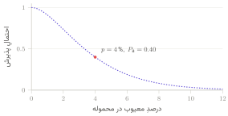
مثال 31.16 (نمونه، محمولههای بد را فقط بهطورِ میانگین رد میکند) پرسش. محمولهای از پیچها با 4 % معیوب، با این طرح، با چه احتمالی پذیرفته میشود؟
پاسخ. حدودِ 40 %.
تفسیر. نمونهگیری در برابرِ محمولههای بد بهطورِ میانگین محافظت میکند، نه در برابرِ هر محموله. پس قلمهای بحرانی، مانندِ پیچهای مهار و تجهیزاتِ بالابری، گواهی و وارسیِ صددرصد دارند و نمونهگیری برای بقیه است. طرحهای نمونهگیری از قرارداد و ISO 2859-1 میآیند (STD-076). وارسی: \(0.96^{50} + 50 \times 0.04 \times 0.96^{49} = 0.40\).
31.4.7 زمینِ زیرِ گهوارهٔ پره
the ground under a blade's storage cradles (teaching)
blade 22 t + cradles 3 t on two cradles; root cradle carries 65 %
cradle feet foot area m2 pressure kPa gravel pad needed?
2 0.25 319 yes
4 0.25 159 yes
4 1.00 40 no
small feet on the loose top layer (ch 29) sink unevenly
and twist the blade - the maker's cradle positions and a
compacted, level laydown pad keep the shell in shapeایده. گهوارهٔ ریشه بیشترِ وزنِ پره را میگیرد. پایههای کوچک روی لایهٔ سستِ رویی (فصلِ ۲۹) ناهمسان فرو میروند و پره را میپیچانند. جای گهوارهها را سازنده تعیین میکند و سکوی انبارِ کوبیده و تراز شکلِ پوسته را حفظ میکند.
31.4.8 پرهٔ انبارشده در توفان
holding a stored blade down in a storm (teaching lift coefficient 1.0)
plan area 111 m2; blade and cradles 25 t
gust m/s lift kN weight kN net uplift kN
20 24 245 0
30 54 245 0
41 102 245 0
even the 41 m/s gust lifts less than the weight here - but
the light tip end carries little of that weight, gusts
push the blade sideways and turn it on its cradles: the
maker's storage instruction asks for straps to ground
anchors and a set direction to the prevailing windقطعههای انبارشده هم مانندِ قطعههای نصبشده بارِ توفان را تحمل میکنند. دستورِ انبارِ سازنده تسمه به لنگرهای زمینی و جهتِ ثابت نسبت به بادِ غالب را میخواهد. وارسی پس از هر بادِ شدید بخشی از برنامهٔ نگهداری است (بخش 31.4.4).
31.4.9 دیرکردِ تحویل و جرثقیلِ بیکار
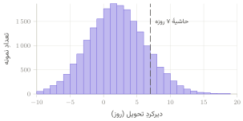
will the nacelle be at the pad when the crane is? (Monte Carlo)
ship +/- 4 days, permit delay mean 1.5 days, road 0-2 nights
planned buffer between delivery and lift: 7 days
share of nacelles later than the buffer: 12.5 %
expected crane idle days per nacelle: 0.28 (at 29 k u a day: 8.2 k u)
with a 3-day buffer instead: 40 % late, 36.8 k u
a week of buffer costs laydown space and preservation; a
short buffer costs crane days - the plan sets it from
these two costs, and the buffer is the cheaper one hereمثال 31.17 (حاشیه ارزانتر از جرثقیل) پرسش. حاشیهٔ هفتروزه و سهروزه میانِ تحویل و بالابری چه هزینهٔ بیکاریِ جرثقیلی دارند؟
پاسخ. با هفت روز، 12.5 % ناسلها دیر میرسند و هزینهٔ مورد انتظار حدودِ 8 k u برای هر ناسل است. با سه روز، 40 % دیر میرسند و هزینه حدودِ 37 k u است.
تفسیر. حاشیهٔ یکهفتهای جای انبار و نگهداری میخواهد. حاشیهٔ کوتاه روزهای جرثقیل را میگیرد. برنامه حاشیه را از این دو هزینه تعیین میکند و اینجا حاشیه ارزانتر است (بخش 31.2.6). وارسی: \(0.28 \times 29 = 8.2\,\text{k u}\).
31.4.10 نوارِ مونتاژِ بومِ جرثقیل
assembling the main crane's boom (teaching configuration)
main boom and luffing jib laid out: about 140 m long
assembly strip needed: boom length + 20 m, 12 m wide
area 1,920 m2, flat within 1 %, cleared of obstacles
assist crane for the boom sections: 100 t class
days to assemble 4, to dismantle 3 (included in the moves)
the strip is part of the first pad's layout and the last
pad's too: where the land, the slope or a cable route does
not allow it, the crane cannot be built there31.4.11 کارِ نگهداری در دورهٔ انتظار
preservation work while 4 nacelles wait 8 weeks (teaching)
task h each every weeks
rotate drivetrain (maker's interval 4 weeks) 2.0 4
check desiccant and humidity cards 0.5 2
check heaters and power 0.5 1
inspect covers and seals after wind 1.0 2
log and photograph 0.5 4
total about 60 person-hours for the waiting period
a missed rotation can mark the bearings (false brinelling)
and void the warranty: the preservation log is evidence,
kept with the custody record (lesson C)چرخاندنِ دورهایِ مجموعهٔ انتقالِ قدرت جلوی آسیبِ یاتاقانها را در حالتِ ایستا میگیرد. چرخشِ جاافتاده ممکن است ضمانت را باطل کند. سابقهٔ نگهداری شاهد است و کنارِ سابقهٔ زنجیرهٔ تحویل نگه داشته میشود (بخش 31.4.5).
31.4.12 طولِ کارزار و ماهِ آغاز
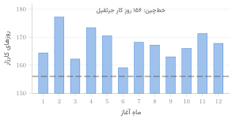
erection campaign length by start month (one crane, data-pack wind)
start month campaign days weather waiting days
1 164 8
2 177 21
3 162 6
4 173 17
5 170 14
6 159 3
7 168 12
8 167 11
9 163 7
10 166 10
11 171 15
12 168 12
156 crane days of work (int_campaign) plus the weather waits
best start month 6 (159 days), worst 2 (177 days)
the same twelve turbines take two and a half weeks longer when
the lifts fall in the windy months: the start date is
a design choice of the schedule (ch 22, 49), and one
data year is a teaching sample, not a forecastمثال 31.18 (ماهِ آغاز، یک انتخابِ طراحی) پرسش. کارزاری که در ماهِ ۶ شروع شود با کارزاری که در ماهِ ۲ شروع شود چه فرقی دارد؟
پاسخ. 159 روز در برابرِ 177 روز، یعنی حدودِ دو هفته و نیم.
تفسیر. کارِ جرثقیل در هر دو یکسان است. فرق در انتظار برای هواست، که به ماههایی بستگی دارد که بالابریها در آنها میافتند. تاریخِ آغاز یک انتخابِ طراحی در برنامهٔ زمانی است (فصلهای ۲۲ و ۴۹). یک سالِ داده نمونهای آموزشی است، نه پیشبینی. وارسی: \(177 - 159 = 18\) روز.
- احتمالِ پذیرشِ محمولهای با 2 % معیوب با این طرح چقدر است؟
- چرا قلمهای بحرانی با نمونهگیری پذیرفته نمیشوند؟
- فشارِ زیرِ چهار پایهٔ 0.5 m² برای گهوارهٔ ریشه چقدر است؟
- چرا پرهٔ انبارشده تسمه و لنگر میخواهد؟
- حاشیهٔ تحویل چگونه تعیین میشود؟
- نوارِ مونتاژِ بومی به طولِ 120 m چه مساحتی دارد؟
- چرا چرخاندنِ مجموعهٔ انتقالِ قدرت شرطِ ضمانت است؟
- چرا طولِ کارزار به ماهِ آغاز بستگی دارد؟
31.4.13 قطعههای یدکیِ کارزار
ایده. اگر یک قطعهٔ مصرفی بهطورِ میانگین \(\lambda\) بار در ماه لازم شود و زمانِ تحویلش \(L\) باشد، شمارِ نیاز در طولِ زمانِ تحویل توزیعِ پواسون با میانگینِ \(\lambda L\) دارد. موجودیای که در 95 % موارد کافی است کوچکترین \(k\) است که:
\[ \sum_{j=0}^{k} \frac{(\lambda L)^j e^{-\lambda L}}{j!} \ge 0.95 \tag{31.9}\]
spares on site for a consumable through its lead time (Poisson)
item use a month lead weeks stock for 95 %
crane wire rope (sets) 0.1 10 1
hydraulic hoses 2.0 3 4
torque tool pumps 0.3 6 2
mats (damaged) 1.5 4 4
a rarely used item with a long lead time still needs one
on site: one broken torque pump can stop the bolting of
a tower for six weeks - spares are priced against the
crane days they protectمثال 31.19 (یک پمپ، شش هفته) پرسش. پمپِ ابزارِ گشتاور ماهی 0.3 بار خراب میشود و تحویلش شش هفته طول میکشد. چند یدکی در ساختگاه لازم است؟
پاسخ. دو پمپ برای پوششِ 95 %.
تفسیر. قلمی که کم مصرف میشود اما زمانِ تحویلِ طولانی دارد، باز هم دستکم یک یدکی میخواهد. یک پمپِ خراب میتواند پیچکشیِ یک برج را شش هفته متوقف کند (بخش 31.3.10). یدکیها در برابرِ روزهای جرثقیلی که حفظ میکنند قیمتگذاری میشوند. وارسی: میانگینِ \(0.3 \times 6/4.33 = 0.42\) و \(P(\le 1) = 0.93\)، \(P(\le 2) = 0.99\).
31.5 ت. مثالِ لجستیک: ناسل از بندر تا برج (مثالِ کارشده)
موقعیت. ناسلِ N-07 باید از بندر به توربینِ T07 برسد و نصب شود. این تمرین زنجیرهٔ کار را با نقطههای توقفِ هوا و دسترسی میچیند. هزینهٔ انتظار برای پنجرهٔ هوا را برآورد میکند، دسترسیِ اضطراری و زمانِ پاسخ را در محلِ دورافتاده میسنجد، و مرزِ این تمرینِ برنامهریزی را با یک طرحِ بالابریِ مصوب روشن میکند.
برنامه:
python -m companion.ch31.lab_d31.5.1 برنامه با نقطههای توقف
PLAN = [ # step, hold point (H) or check (C), who releases it
("route permit and escort booked", "H", "transport company / authority"),
("bridge assessments accepted (2)", "H", "bridge owner's engineer"),
("overpass and power line measured", "H", "route surveyor / line owner"),
("crane assembled and inspected", "H", "crane inspector"),
("crane pad and mats accepted", "H", "civil engineer (ch 29, ch 30)"),
("tower erected and bolted, ready", "C", "erection supervisor"),
("convoy at the site gate, receiving check", "C", "receiving inspector"),
("forecast: 6 h below 10 m/s at hub", "H", "lift supervisor"),
("lift plan approved, briefing held", "H", "appointed person (lifts)"),
("exclusion zone set, rescue team on site", "H", "site manager"),
("radio check crane-ground-nacelle", "C", "lift supervisor"),
("lift, set, first bolts to maker's value", "-", "erection crew"),
]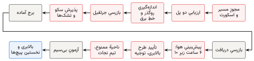
nacelle route-to-install plan with hold points (teaching)
1 [H] route permit and escort booked
released by transport company / authority
2 [H] bridge assessments accepted (2)
released by bridge owner's engineer
3 [H] overpass and power line measured
released by route surveyor / line owner
4 [H] crane assembled and inspected
released by crane inspector
5 [H] crane pad and mats accepted
released by civil engineer (ch 29, ch 30)
6 [C] tower erected and bolted, ready
released by erection supervisor
7 [C] convoy at the site gate, receiving check
released by receiving inspector
8 [H] forecast: 6 h below 10 m/s at hub
released by lift supervisor
9 [H] lift plan approved, briefing held
released by appointed person (lifts)
10 [H] exclusion zone set, rescue team on site
released by site manager
11 [C] radio check crane-ground-nacelle
released by lift supervisor
12 [-] lift, set, first bolts to maker's value
released by erection crew
8 hold points: any one of them stops the next step
until the named person releases it31.5.2 انتظار برای پنجرهٔ هوا
waiting for the nacelle's weather window (6 h below 10 m/s at hub)
crew ready at 06:00 on each day of the data-pack year:
no wait 72 % of days; mean wait 5.6 h; worst 120 h
expected standby cost a lift at 60 k u a day: 14.1 k u; worst 300 k u
the average is small, the worst case is not: the contract
says who pays for weather standby, and the plan says
which work the crane does while it waits31.5.3 دسترسیِ اضطراری و زمانِ پاسخ
ایده. در محلِ دورافتاده، زمانِ رسیدن به مصدوم سه بخش دارد: آمادهشدن، رانندگی و دسترسی به خودِ محلِ کار، که در ناسل یعنی بالارفتن و نجات از ارتفاع:
\[ t = t_\text{mob} + \frac{d}{v}\,60 + t_\text{acc} \tag{31.10}\]
emergency response to a casualty in the nacelle (teaching times, min)
responder km mobilise drive access total
on-site first aider and rescue team 0 5 0 25 30
district ambulance 35 15 35 30 80
hospital (by road) 70 15 60 30 105
outside help needs well over an hour to reach a casualty
at height: rescue from the nacelle is the site team's job
(trained, equipped, on site during lifts), and the medical
transfer plan is agreed with the local services (ch 32);
mobile coverage is patchy on the plain - radios or a
satellite link are part of the lift's hold points31.5.4 طرحِ بالابریِ مصوب چه دارد
what an approved lift plan contains (this lab is not one)
1. crane configuration and the crane maker's load chart for it
2. load data: mass, centre of gravity, lifting points (component maker)
3. rigging: slings, shackles, spreader - certificates and inspection
4. ground: pad bearing and mats (calculation and test, ch 29 / ch 30)
5. weather limits and how they are measured on site
6. exclusion zone, communications, roles and stop rules
7. method statement and risk assessment, rescue arrangements
8. signatures: lift planner, appointed person, crane operator
this chapter plans and asks; the approved plan is written
and signed by competent people for the real crane, load
and day - teaching numbers never go into itمثال 31.20 (مثالِ کارشده: تحویل و بالابریِ ناسل با نقطههای توقف) پرسش. تحویل و بالابریِ ناسل را از بندر تا برج برنامهریزی کنید. نقطههای توقفِ هوا و دسترسی، دسترسیِ اضطراری و تأییدهای لازم را مشخص کنید و بگویید چه چیزی این برنامه را از یک طرحِ بالابریِ مصوب جدا میکند.
پاسخ.
- نقطههای توقف: دوازده گام با هشت نقطهٔ توقف، از مجوزِ مسیر و ارزیابیِ دو پل تا ناحیهٔ ممنوع و تیمِ نجات. هر کدام آزادکنندهٔ نامبرده دارد.
- هوا: در 72 % روزها انتظاری نیست. میانگینِ انتظار 5.6 ساعت است و بدترین 120 ساعت. هزینهٔ انتظارِ مورد انتظار حدودِ 14 k u برای هر بالابری است و در بدترین حالت 300 k u.
- اضطرار: کمکِ بیرونی پس از 80 تا 105 دقیقه به مصدوم در ناسل میرسد. تیمِ نجاتِ ساختگاه 30 دقیقه.
- تمایز: طرحِ مصوب پیکربندیِ واقعیِ جرثقیل با جدولِ بارِ سازندهاش را دارد. دادهٔ بار، گواهیِ ملزوماتِ بالابری، محاسبهٔ زمین، روشِ اجرا و امضاها هم در آن است.
تفسیر. میانگینِ انتظار کوچک است و بدترین حالت نه. قرارداد میگوید هزینهٔ انتظار با کیست و برنامه میگوید جرثقیل در انتظار چه کار میکند. نجات از ارتفاع کارِ تیمِ آموزشدیدهٔ ساختگاه است که در بالابریها حاضر است. انتقالِ پزشکی با خدماتِ محلی هماهنگ میشود (فصلِ ۳۲). پوششِ تلفنِ همراه روی دشت ناقص است، پس بیسیم یا پیوندِ ماهوارهای یکی از نقطههای توقف است. این تمرین برنامهریزی و پرسش است. طرحِ مصوب را افرادِ صلاحیتدار برای جرثقیل، بار و روزِ واقعی مینویسند و عددهای آموزشی هرگز به آن راه نمییابند. وارسی: \(60 \times 5.6/24 = 14.0\,\text{k u}\).
طرحِ بالابری، پیکربندیِ جرثقیل، محاسبهٔ زمین و قاعدههای توقف را مهندسِ بالابری و فردِ مسئولِ بالابری، که صلاحیتدارند، تأیید میکنند. برنامهٔ نجات و انتقالِ پزشکی با متخصصانِ نجات و خدماتِ پزشکیِ محل است.
- سه نقطهٔ توقفی را نام ببرید که پیش از رسیدنِ کاروان بسته میشوند.
- چرا پیشبینیِ هوا یک نقطهٔ توقف است و نه یک وارسیِ ساده؟
- هزینهٔ انتظارِ مورد انتظار با میانگینِ 8 h و 60 k u در روز چقدر است؟
- زمانِ پاسخِ آمبولانس از 50 km با 60 km/h، 15 و 30 دقیقه چیست؟
- چرا نجات از ناسل کارِ تیمِ ساختگاه است؟
- پنج قلمی را که فقط طرحِ مصوب دارد نام ببرید.
31.6 ث. لجستیکِ سامانهٔ صادرات
خطِ 132 kV، کابلهای 33 kV و پست لجستیکِ خودشان را دارند: صدها قرقرهٔ کابل، قرقرههای سیم، دکلهای مشبک، ترانسفورماتورِ سنگین و تجهیزاتِ پست. هر کدام بستهکاری، جابهجایی، انبار، ترتیبِ کار و تأییدِ خودش را میخواهد (A-366، A-367).
برنامه:
python -m companion.ch31.examples_e31.6.1 قرقرههای کابلِ ۳۳ کیلوولت
33 kV collector cable on drums (teaching: 1 km of single core a drum)
cable 185 km -> 186 drums of 5.5 t, 1,023 t in all; 62 truck loads of three
laydown for the drums: 2,321 m2
drums travel on their sides only if the maker allows it,
are rolled in the arrow's direction, and are stored on
firm ground with chocks; each drum's number ties to its
test report and to the section it is laid in (ch 24)31.6.2 سیمکشیِ خطِ ۱۳۲ کیلوولت
132 kV conductor and stringing (teaching; route of ch 29)
conductor 21.8 km + earth wire: 12 reels of about 2.8 t
stringing sections between angle and terminal towers: 5
puller and tensioner sites: 10 (one at each section end)
each site needs a level pad, access for a low-loader and
anchors; the site track crossing needs a guard structure
so a dropped conductor never reaches the trackمثال 31.21 (بخشهای سیمکشی میانِ دکلهای زاویه) پرسش. چرا سیمکشی در پنج بخش انجام میشود و هر بخش چه میخواهد؟
پاسخ. چهار نقطهٔ زاویه و دو دکلِ انتهایی خط را به پنج بخش میشکنند (مثال 29.58). هر بخش یک کشنده و یک ترمز در دو سرش دارد: ده محلِ کار.
تفسیر. هر محل سکوی تراز، دسترسی برای کفی و مهار میخواهد. گذرِ راهِ ساختگاه سازهٔ محافظ میخواهد تا سیمِ افتاده هرگز به راه نرسد. راستکردنِ مسیر در فصلِ ۲۹ کارِ سیمکشی را هم کم کرد. وارسی: \(7.06 \times 3 \times 1.03 = 21.8\,\text{km}\).
31.6.3 هوای سیمکشی
stringing weather (wind at 20 m from the data pack; teaching limit
10 m/s for 8 h)
972 windows of 8 h a year at any hour (daylight work keeps about half)
stringing is rarely stopped by wind on this plain; heat
is the limit in summer (work hours, crew welfare, ch 32)
and the conductor's sag is set to the temperature on the
day with the line designer's sag tables (ch 24)31.6.4 ترتیبِ نصبِ پست
substation delivery and installation sequence (teaching)
1. [H] civil works, plinths and bunds accepted (ch 29)
2. [H] earthing grid installed and tested (ch 26)
3. [H] main transformer delivered, impact recorder read
4. [W] transformer jacked and skidded onto the plinth
5. [W] bushings, radiators, conservator fitted
6. [H] oil filled under vacuum, samples taken
7. [W] switchgear and gantries erected
8. [H] cable terminations by qualified jointers
9. [H] handover to testing and commissioning (ch 50)
the transformer arrives without oil (72 t, ch 25) and is
skidded rather than lifted when a crane cannot reach;
each step is a work package with its own approval31.6.5 بستههای کار و تأییدکنندگانشان
export-system work packages and who approves them
cable laying and jointing
basis: cable maker's procedure; approved by qualified jointer, QC
road and track crossings
basis: authority's permit; approved by road authority
line stringing
basis: line designer's method; approved by line owner / operator
transformer installation
basis: maker's instruction; approved by maker's supervisor
work near energised parts
basis: permit-to-work system; approved by authorised person (ch 32)
the logistics plan sequences them; it does not replace
any of their approvalsمثال 31.22 (برنامهٔ لجستیک جای تأیید را نمیگیرد) پرسش. برنامهٔ لجستیک دربارهٔ بستهٔ کارِ «کار نزدیکِ قسمتهای برقدار» چه کاری میتواند بکند و چه کاری نه؟
پاسخ. میتواند آن را در زمان بچیند و منابعش را برساند. نمیتواند جایگزینِ مجوزِ کار و تأییدِ فردِ مجاز شود (فصلِ ۳۲).
تفسیر. هر بستهٔ کار مبنا و تأییدکنندهٔ خودش را دارد: روالِ سازندهٔ کابل، مجوزِ مرجعِ راه، روشِ طراحِ خط، دستورِ سازندهٔ ترانسفورماتور و سامانهٔ مجوزِ کار. برنامهٔ لجستیک آنها را مرتب میکند، اما هیچکدام را دور نمیزند. وارسی: پنج بستهٔ کار، هر کدام با یک تأییدکننده.
- چند قرقره برای 185 km کابل با 1 km در هر قرقره لازم است؟
- چرا قرقرهٔ کابل در جهتِ پیکان غلتانده میشود؟
- چند قرقرهٔ سیم برای 21.8 km با 2.5 km در هر قرقره لازم است؟
- چرا گذرِ راهِ ساختگاه سازهٔ محافظ میخواهد؟
- چرا ترانسفورماتور بیروغن حمل میشود؟
- پنج بستهٔ کارِ سامانهٔ صادرات و تأییدکنندگانشان را نام ببرید.
31.7 ساخت و تولیدِ صنعتی در این فصل
لجستیک از کارخانه شروع میشود. بستهکاری، نقطههای بالابری، نشانگرهای ضربه و کجشدن، رطوبتگیر و دستورِ انبار همه پیش از ارسال در کارخانه طراحی و آزموده میشوند. اینها بخشی از آزمونها و مدارکِ کارخانهایاند (فصلِ ۴۰). سازنده دادهٔ بار را میدهد: جرم، مرکزِ ثقل، نقطههای بالابری و حدِ باد. طرحِ بالابری بدونِ این داده نوشته نمیشود. محصولاتِ فصلهای ۴۲ تا ۴۷ هر کدام دستورِ حمل و انبارِ خودشان را دارند و این دستورها شرطِ ضمانتاند.
31.8 نیروگاهِ P: سه مثالِ یکپارچه
برنامه:
python -m companion.ch31.integratedمثال 31.23 (مقدماتی: دو نتیجهٔ لجستیکی با دست) پرسش. بارِ محورِ تریلیِ ناسل و بهرهوریِ جرثقیل در 16 m را با دست حساب و با کد مقایسه کنید.
two logistics results checked by hand
nacelle trailer axle: (42 + 0.95 x 160) x 9.81 / 16 = 118.9 kN; code 118.9
crane at 16 m: chart point 210 t; use (160 + 8) / 210 = 0.80; code 0.80
a hand check of one number from each formula protects
the whole table against a wrong unit or indexپاسخ. 118.9 kN و 0.80، هر دو با کد برابر.
تفسیر. وارسیِ دستیِ یک عدد از هر فرمول جدولِ کامل را در برابرِ واحد یا ردیفِ اشتباه حفظ میکند. وارسی: \((42 + 152) \times 9.81 = 1{,}903\,\text{kN}\) روی ۱۶ محور.
مثال 31.24 (میانی: کارزارِ تحویل در عدد) پرسش. کارزارِ تحویل و برپاییِ نیروگاهِ P چه اندازهای دارد؟
the delivery campaign of Plant P in numbers (teaching)
turbine abnormal loads: 108 (12 x 9)
crane: one main crawler crane, about 10 days a turbine plus
3 days of moving between pads -> about 156 crane days
weather standby expected: about 14 k u a nacelle lift (lab D),
with a worst case near 300 k u
collector drums 186, conductor reels 12, transformer 1 heavy haul
laydown: about 9,600 m2 at peak (four turbines staged)
bridges: 2 of 3 need the owner's assessment before any convoy
hold points per nacelle lift: 8 (lab D)تفسیر. 108 بارِ غیرعادی، حدودِ 156 روز جرثقیل، دو پلِ نیازمندِ ارزیابی و هشت نقطهٔ توقف برای هر ناسل. کارزار یک پروژهٔ کوچک درونِ پروژه است و برنامهٔ زمانی، تیم و دفترِ خطرِ خودش را دارد (فصلهای ۲۲ و ۴۹). وارسی: \(12 \times 9 = 108\).
مثال 31.25 (یکپارچه: مبنای لجستیکِ نیروگاهِ P) پرسش. مبنای لجستیک را با یافتهها و موردهای باز بنویسید.
logistics basis of Plant P (D-035):
route: port to site 244 km; abnormal loads at night under the
permit (U-106); two long bridges assessed by their owner
before the first convoy; the 4.85 m overpass leaves 5 cm
for the base section - measured, with a fallback route
vehicles: 16 trailer axles for the nacelle, 14 for the base
section (teaching axle limit 120 kN)
lifts: one crawler crane; nacelle at 0.80 of the chart; tandem
and near-live lifts critical whatever their use; the
approved lift plans are the lift engineer's
weather: lift limits from the maker; the rotor waits longest;
standby paid as the contract says; nacelles just in time
receipt and preservation: inspection at unloading; impact
recorders read; desiccant and heaters logged; every
hand-over signed (chain of custody)
emergency: rescue at height by the trained site team during
lifts; medical transfer agreed with local services; radio
or satellite where mobile coverage fails (ch 32)
export works: 186 drums, 12 reels, 5 stringing sections, the
transformer skidded onto its plinth; each work package
with its own approval
campaign: route capacity (night window, parking places) sets
the pace; a 7-day delivery buffer; start month chosen with
the wind (159-177 days in the data year); one main crane
unless the grid date makes a second one pay
findings: swept paths at every bend; a pusher above 8-10 %
grades; nacelles on the maker's yoke, never site slings;
cable duct runs limited by bends and length (joint bays)تفسیر. این تصمیمِ D-035 است. یافتههایی که به فصلهای دیگر برمیگردند:
- قطرِ بخشِ پایهٔ برج زیرِ روگذر فقط 5 cm حاشیه دارد (فصلِ ۳۰).
- دو پل از گشتاورِ مجاز بیشترند و ارزیابیِ مالک پیش از نخستین کاروان لازم است.
- بارِ زنجیرهای جرثقیل روی سکوی فصلِ ۲۹ دوباره وارسی میشود.
- هزینهٔ انتظارِ هوا در قرارداد تقسیم میشود (فصلِ ۲۱).
- نجات از ارتفاع و پوششِ ارتباطی بخشی از نقطههای توقفاند (فصلِ ۳۲).
31.9 عددهای کلیدیِ لجستیکِ نیروگاهِ P
| کمیت | مقدار | مثال |
|---|---|---|
| بارهای غیرعادیِ توربینها | 108 (۱۲ × ۹) | مثال 31.24 |
| محورهای تریلی: ناسل / بخشِ پایه | ۱۶ / ۱۴ | مثال 31.1 |
| پلها: نسبتِ گشتاور به مجاز | 1.26، 0.81، 1.05 | مثال 31.2 |
| حاشیهٔ ارتفاعِ بخشِ پایه زیرِ روگذر | 5 cm | بخش 31.2.4 |
| بهرهوریِ جرثقیل برای ناسل در 16 m | 0.80 | مثال 31.9 |
| طولانیترین انتظارِ روتور | 214 h | مثال 31.10 |
| هزینهٔ انتظارِ مورد انتظارِ هر ناسل؛ بدترین | 14؛ 300 k u | مثال 31.20 |
| زمانِ پاسخ: تیمِ ساختگاه / آمبولانس / بیمارستان | 30 / 80 / 105 min | مثال 31.20 |
| قرقرههای کابل؛ قرقرههای سیم؛ بخشهای سیمکشی | 186؛ 12؛ ۵ | مثال 31.21 |
31.10 گردشِ کارِ لجستیک
- بارها و قیدهایشان: طول، ارتفاع، جرم، حدِ باد، دادهٔ سازنده (بخش 31.2.1).
- مسیر: نقشهبرداری، محورها، پلها، ارتفاعهای آزاد، مجوز، زمانِ کاروان (بخش 31.2).
- بالابری: ظرفیت از جدول، رده و تأییدکننده، زمین، باد روی بار، پنجرههای هوا (بخش 31.3).
- دریافت و نگهداری: بازرسی، آسیب، انبار، رطوبت، زنجیرهٔ تحویل (بخش 31.4).
- برنامهٔ هر بالابریِ بزرگ با نقطههای توقف، انتظار، اضطرار و تأییدها (بخش 31.5).
- سامانهٔ صادرات: قرقرهها، سیمکشی، پست، بستههای کار (بخش 31.6).
31.11 آزمایشگاههای پایتونِ این فصل
| آزمایشگاه | برنامه | آنچه میسازد |
|---|---|---|
| داده | sources | بارها، مسیر، پلها، ارتفاعها، جدولِ بار، حدهای باد |
| مسیر | examples_a | بارها، محورها، پلها، ارتفاع، کاروان، ترتیب |
| بالابری | examples_b | جدولِ بار، رده، زنجیرها، باد روی بار، پنجرهها |
| دریافت | examples_c | بازرسی، آسیب، انبار، رطوبتگیر، زنجیرهٔ تحویل |
| آزمایشگاهِ ت | lab_d | برنامهٔ ناسل، انتظار، اضطرار، طرحِ مصوب |
| صادرات | examples_e | قرقرهها، سیمکشی، هوا، پست، بستههای کار |
| کارزار | examples_f | جابهجاییِ جرثقیل، یک یا دو جرثقیل، بندر، بستنِ راه، هزینه، سوخت |
| راه | examples_g | جاروبِ پره، سربالایی، بادِ جانبی، مهار، ظرفیتِ شبانه |
| بالابری و کابل | examples_h | اسلینگ، تکپره، پیچِ فلنج، کشیدنِ کابل، قرقره، سُرانش |
| برنامهریزی | examples_i | منحنیِ پذیرش، طولِ کارزار بر حسبِ ماه |
| انبار و زمان | examples_j | گهواره، تسمه در توفان، دیرکردِ تحویل، نوارِ بوم، نگهداری |
| گمرک و یدکی | examples_k | اسناد، زمانِ ترخیص، یدکیها با پواسون |
| نیروگاهِ P | integrated | با دست، کارزار، مبنای D-035 |
| مثالها و پاسخها | worked | سطرهای E01 و P01 به بعد |
ماژولِ تازهٔ logistics با سه آزمون در برابرِ حسابِ دستی پایهٔ این برنامههاست. سالِ ساعتیِ باد از بستهٔ داده میآید و جرمها از فصلهای ۱۱، ۲۵ و ۳۰.
31.12 جعبهٔ استاندارد و انطباق
- قاعدههای حملِ بارهای غیرعادی، مجوزها، ساعتها و اسکورت از مرجعِ راهِ هر کشور است (U-106). قاعدههای بالابری، صلاحیتِ افراد و بازرسیِ جرثقیل از قانون و آییننامهٔ ایمنیِ محل (فصلهای ۳۲ و ۵۵ تا ۵۷).
- دستورهای حمل، انبار و بالابریِ سازندگان شرطِ ضمانتاند و بر هر عددِ این فصل مقدماند.
- نمونهگیریِ پذیرش در دریافت: ISO 2859-1:2026 (STD-076).
- هیچ عددی در این فصل الزام یا طرحِ مصوب نیست. (وارسیشده 2026-11-16.)
31.13 تحویلدادنیِ نیروگاهِ P
| سند | محتوا | معیارِ پذیرش |
|---|---|---|
| PLP-PRJ-PRO-0001 | برنامهٔ لجستیکِ نیروگاه و سامانهٔ صادرات | مسیر، ترتیب، انبار، نقطههای توقف، تأییدکنندگان |
| PLP-PRJ-REG-0014 | دفترِ بالابریها با رده و تأییدکننده | هر بالابری با طرحِ مصوبش پیوند دارد |
| PLP-PRJ-REG-0015 | دفترِ دریافت، آسیب و زنجیرهٔ تحویل | هر تحویل امضاشده؛ هر آسیب با اقدام |
| PLP-PRJ-PRO-0002 | برنامهٔ اضطرار و ارتباطِ محلهای دورافتاده | زمانِ پاسخ، نجات، انتقالِ پزشکی، ارتباط |
این فصل اینها را به پروندهٔ نیروگاهِ P میافزاید:
- تصمیمِ D-035: مبنای لجستیک (مثال 31.25).
- فرضهای A-363 تا A-367:
- A-363: بارها و ابعادشان.
- A-364: مسیر، پلها و ارتفاعها.
- A-365: جرثقیل و حدهای باد.
- A-366: دریافت، نگهداری و فضای انبار.
- A-367: اضطرار و سامانهٔ صادرات.
- مجهولها: حدهای حمل و مجوزِ مسیر (U-106، از فصلِ ۲۹)؛ ظرفیتِ واقعیِ پلها و مسیرِ جایگزین (U-109).
- یافتهها: دو پل، روگذرِ کمحاشیه، فشارِ زنجیرها، هزینهٔ انتظار، و نجات و ارتباطِ محلِ دورافتاده.
- کتابخانهٔ همراه: ماژولِ
logisticsبا آزمونها و برنامههای فصلِ ۳۱.
31.14 جمعبندی
- مسیر: هر بار یک قیدِ حاکم دارد؛ محورها زیرِ حدِ مجوز؛ پلها با گشتاورِ دهانه؛ ارتفاعهای آزادِ اندازهگیریشده؛ زمانِ کاروان و پنجرهٔ مجوز؛ ناسلِ بهموقع (بخش 31.2).
- بالابری: ظرفیت تابعِ شعاع است؛ بهرهوری و رده تأییدکننده را تعیین میکنند؛ زمینِ زیرِ زنجیرها؛ بارِ آویخته بادبان است؛ هزینه را انتظار میسازد، نه تعدادِ پنجرهها (بخش 31.3).
- دریافت: بازرسی پیش از رفتنِ راننده؛ ضربهنگار پیش از پیادهکردن؛ انبارِ پرهها؛ رطوبتگیر و سابقه؛ هر تحویل با دو امضا (بخش 31.4).
- مثالِ ناسل: نقطههای توقف، انتظار و هزینهاش، زمانِ پاسخِ اضطراری، و مرزِ برنامه با طرحِ مصوب (بخش 31.5).
- صادرات: قرقرهها، بخشهای سیمکشی، ترتیبِ پست، و بستههای کار با تأییدکنندگانشان (بخش 31.6).
31.14.1 واژگانِ فصلِ ۳۱
| فارسی | انگلیسی | یادداشت |
|---|---|---|
| بارِ ترافیکیِ غیرعادی | abnormal (oversized) load | |
| تریلیِ ماژولار | modular trailer | |
| بارِ محور | axle load | |
| ارتفاعِ آزاد | vertical clearance | |
| مجوزِ مسیر | route permit | |
| نقشهبرداریِ مسیر | route survey | |
| جدولِ بارِ جرثقیل | crane load chart | |
| بهرهوریِ بالابری | lift utilisation | |
| طرحِ بالابری | lift plan | |
| بالابریِ بحرانی | critical lift | |
| فردِ مسئولِ بالابری | appointed person (lifting) | |
| ناحیهٔ ممنوع | exclusion zone | |
| پنجرهٔ هوا | weather window | |
| هزینهٔ انتظار | standby cost | |
| بازرسیِ دریافت | receiving inspection | |
| ضربهنگار | impact recorder | |
| رطوبتگیر | desiccant | |
| زنجیرهٔ تحویل | chain of custody | |
| فضای انبار | laydown area | |
| قرقرهٔ کابل | cable drum | |
| بخشِ سیمکشی | stringing section | |
| سازهٔ محافظ | guard structure | |
| بستهٔ کار | work package | |
| زمانِ پاسخ | response time |
31.15 ارزیابیِ پلکانی
معیارِ تسلطِ این فصل: خواننده میتواند برای هر بارِ بزرگ مسیر، خودرو، بالابری و نگهداری را با نقطههای توقف و تأییدکنندگانش برنامهریزی کند و برنامهٔ خود را از طرحِ مصوب جدا کند. پاسخها در بخش 31.16 آمدهاند.
31.15.1 پلهٔ ۱: مبانی
تمرین 31.1 قیدِ حاکمِ پره، بخشِ پایه و ناسل را نام ببرید.
تمرین 31.2 معادلهٔ 31.1 را توضیح دهید.
تمرین 31.3 چرا محورِ بیشتر همیشه بهتر نیست؟
تمرین 31.4 معادلهٔ 31.2 را توضیح دهید.
تمرین 31.5 چه کسی دربارهٔ پلِ بیشبار تصمیم میگیرد؟
تمرین 31.6 چرا ارتفاعهای آزاد اندازهگیری میشوند و از نقشه خوانده نمیشوند؟
تمرین 31.7 چرا ناسل بهموقع میرسد؟
تمرین 31.8 معادلهٔ 31.5 را توضیح دهید.
تمرین 31.9 چرا ظرفیتِ جرثقیل با شعاع کم میشود؟
تمرین 31.10 چه چیزی ردهٔ بالابری را تعیین میکند؟
تمرین 31.11 چرا فشارِ زیرِ لبهٔ زنجیر دو برابرِ میانگین است؟
تمرین 31.12 چرا بارِ آویخته بادبان است؟
تمرین 31.13 پنجرهٔ هوا را تعریف کنید.
تمرین 31.14 چرا انتظار، و نه تعدادِ پنجرهها، هزینه را میسازد؟
تمرین 31.15 هفت قلمِ بازرسیِ دریافت را نام ببرید.
تمرین 31.16 چرا ضربهنگارِ ترانسفورماتور پیش از پیادهکردن خوانده میشود؟
تمرین 31.17 چرا دستورِ انبارِ سازنده شرطِ ضمانت است؟
تمرین 31.18 زنجیرهٔ تحویل چیست؟
تمرین 31.19 معادلهٔ 31.10 را توضیح دهید.
تمرین 31.20 هشت قلمِ طرحِ بالابریِ مصوب را نام ببرید.
تمرین 31.21 بخشِ سیمکشی چیست و مرزهایش کجاست؟
تمرین 31.22 ترتیبِ نصبِ پست را از کارِ عمرانی تا تحویل بگویید.
تمرین 31.23 چرا برنامهٔ لجستیک جای تأییدِ بستههای کار را نمیگیرد؟
تمرین 31.24 چرا جرثقیلِ زنجیری میانِ بیشترِ سکوها پیاده میرود و نه پیادهوسوار؟
تمرین 31.25 چرا صف به بندر برمیگردد؟
تمرین 31.26 بزرگترین قلمِ هزینهٔ لجستیکِ توربین چیست؟
تمرین 31.27 معادلهٔ 31.3 را توضیح دهید.
تمرین 31.28 معادلهٔ 31.4 را توضیح دهید.
تمرین 31.29 معادلهٔ 31.6 را توضیح دهید.
تمرین 31.30 معادلهٔ 31.7 را توضیح دهید.
تمرین 31.31 چرا ظرفیتِ مسیر، نه کشتی، طولِ کارزار را میسازد؟
تمرین 31.32 معادلهٔ 31.8 را توضیح دهید.
تمرین 31.33 چرا ماهِ آغازِ کارزار یک انتخابِ طراحی است؟
تمرین 31.34 معادلهٔ 31.9 را توضیح دهید.
تمرین 31.35 چرا یک سندِ ناسازگار کلِ محموله را نگه میدارد؟
31.15.2 پلهٔ ۲: تحلیل
تمرین 31.36 بارِ هر محورِ تریلیِ ناسل با ۱۶ محور؟
تمرین 31.37 همان با ۱۲ محور؟
تمرین 31.38 بارِ هر محور با 100 t روی ۱۰ محور، 10 % روی کشنده؟
تمرین 31.39 نسبتِ گشتاورِ پلِ 32 m با 2,280 kN روی 24 m و مجازِ 9,000 kN m؟
تمرین 31.40 همان روی دهانهٔ 12 m با مجازِ 4,200؟
تمرین 31.41 بارِ نقطهایِ 1,000 kN روی 16 m با مجازِ 4,000؟
تمرین 31.42 بارِ 1,500 kN روی 10 m در دهانهٔ 20 m با مجازِ 6,000؟
تمرین 31.43 زمانِ کاروانِ 244 km با سرعتهای جدول و سه ساعت توقف؟
تمرین 31.44 ظرفیت در 22 m؟
تمرین 31.45 ظرفیت در 18 m؟
تمرین 31.46 بهرهوریِ 120 + 9 t در 20 m؟
تمرین 31.47 بهرهوریِ 160 + 8 t در 17 m؟
تمرین 31.48 نیروی باد روی روتور (555 m²) در 8 m/s؟
تمرین 31.49 نیروی باد روی پهلوی ناسل (60 m²) در 10 m/s؟
تمرین 31.50 نیروی باد روی 100 m² در 10 m/s؟
تمرین 31.51 فشارِ میانگینِ زنجیرها با 1,018 t روی 36 m²؟
تمرین 31.52 رطوبتگیرِ 12 m³ برای نه ماه؟
تمرین 31.53 رطوبتگیرِ 8 m³ برای شش ماه؟
تمرین 31.54 فضای انبارِ سه پره (74 × 4.2 m) با ضریبِ 1.6؟
تمرین 31.55 زمانِ پاسخ از 70 km با 70 km/h، 15 و 30 دقیقه؟
تمرین 31.56 زمانِ پاسخ از 40 km با 60 km/h، 10 و 20 دقیقه؟
تمرین 31.57 قرقرهها برای 185 km کابل؟
تمرین 31.58 کامیونهای سهقرقرهای برای 186 قرقره؟
تمرین 31.59 قرقرههای سیم برای 21.8 km با 2.5 km؟
تمرین 31.60 حاشیهٔ ارتفاعِ کفِ 0.30 و بارِ 4.50 m زیرِ 4.85 m؟
تمرین 31.61 هزینهٔ انتظار با میانگینِ 5.6 h و 60 k u در روز؟
تمرین 31.62 بارهای غیرعادیِ ۱۲ توربین با ۹ بار برای هر کدام؟
تمرین 31.63 زمانِ پیادهرفتنِ جرثقیل برای 600 m؟
تمرین 31.64 هزینهٔ دو جرثقیلِ اصلی؟
تمرین 31.65 هزینهٔ انبارِ دوازده دست با دو دست در هفته؟
تمرین 31.66 ساعتهای بستنِ راهِ کمربندیِ روستا؟
تمرین 31.67 گازوئیلِ کارزارِ برپایی؟
تمرین 31.68 جاروبِ اضافیِ نوکِ پره در شعاعِ 40 m؟
تمرین 31.69 نیروی کشش روی شیبِ 8 %؟
تمرین 31.70 نسبتِ گشتاورِ واژگونی در تندبادِ 25 m/s؟
تمرین 31.71 مهارهای لازم در جهتِ جلو؟
تمرین 31.72 کاروان در هفته با دو جای توقف؟
تمرین 31.73 کششِ هر شاخه در زاویهٔ ۶۰ درجه؟
تمرین 31.74 پنجرههای تکپره در سالِ داده؟
تمرین 31.75 زمانِ کششدادنِ یک فلنج با دو ابزار؟
تمرین 31.76 کشش در پایانِ مسیرِ 300 m با دو خم؟
تمرین 31.77 نیروی سُراندنِ ترانسفورماتور روی بالشتکِ تفلونی؟
تمرین 31.78 احتمالِ پذیرشِ محمولهای با 6 % معیوب؟
تمرین 31.79 فشارِ زیرِ دو پایهٔ 0.25 m² گهوارهٔ ریشه؟
تمرین 31.80 نیروی برآر روی پرهٔ انبارشده در 41 m/s؟
تمرین 31.81 سهمِ ناسلهای دیررس با حاشیهٔ هفتروزه؟
تمرین 31.82 مساحتِ نوارِ مونتاژِ بوم؟
تمرین 31.83 ساعتهای نگهداریِ چهار ناسل در هشت هفته؟
تمرین 31.84 طولِ کارزار با آغاز در ماهِ ۴؟
تمرین 31.85 صدکِ ۹۰امِ زمانِ ترخیص؟
تمرین 31.86 یدکیِ شیلنگِ هیدرولیک برای 95 %؟
31.15.3 پلهٔ ۳: کاربرد
تمرین 31.87 شرکتِ حمل میخواهد ناسل را با ۱۲ محور ببرد. چه میگویید؟
تمرین 31.88 یک هفته پیش از نخستین کاروان معلوم شده پلِ رودخانه بیشبار است. چه گزینههایی هست؟
تمرین 31.89 ارتفاعِ روگذر از نقشه 4.90 m خوانده شده است. میپذیرید؟
تمرین 31.90 جرثقیل یک متر عقبتر از برنامه مستقر شده است. چه اثری دارد؟
تمرین 31.91 بالابریِ روتور با بهرهوریِ 0.67 «پیچیده» ردهبندی شده است. درست است؟
تمرین 31.92 باد در ارتفاعِ هاب 9 m/s است. روتور بالا برود؟
تمرین 31.93 پیمانکار هزینهٔ انتظارِ نهروزه را از مالک میخواهد. چه چیزی تعیینکننده است؟
تمرین 31.94 یک پره با لبهٔ حملهٔ آسیبدیده رسیده است. چه میکنید؟
تمرین 31.95 ضربهنگارِ ترانسفورماتور پس از پیادهکردن خوانده شده است. مسئله چیست؟
تمرین 31.96 تابلوهای مبدل نه ماه در انبار ماندهاند. چه وارسی میکنید؟
تمرین 31.97 یک قرقرهٔ کابل تحویلِ امضانشده دارد و آسیب دیده است. چه کسی مسئول است؟
تمرین 31.98 برای بالابری تیمِ نجات حاضر نیست اما آمبولانس خبر شده است. بالابری انجام شود؟
تمرین 31.99 پوششِ تلفنِ همراه در پدِ T07 ناقص است. چه میکنید؟
تمرین 31.100 سیمکشی بدونِ سازهٔ محافظ روی راهِ ساختگاه برنامهریزی شده است. پاسخ دهید.
تمرین 31.101 ترانسفورماتور با روغن رسیده و از حدِ محور بیشتر است. چه چیزی اشتباه بود؟
تمرین 31.102 پیمانکار میخواهد جرثقیل را از زیرِ خطِ برق به سکوی بعدی ببرد. پاسخ دهید.
تمرین 31.103 مالک جرثقیلِ دوم را برای انرژیِ زودتر میخواهد، اما اتصال به شبکه دو ماه دیرتر است. چه میگویید؟
تمرین 31.104 پلِ مسیر برای ارزیابی سه هفته بسته میشود و کشتی در راه است. چه میکنید؟
تمرین 31.105 مطالعهٔ جاروب برای پیچِ روستا انجام نشده است. کاروان حرکت کند؟
تمرین 31.106 گروهِ بالابری اسلینگها را با زاویهٔ ۱۲۰ درجه بسته است. پاسخ دهید.
تمرین 31.107 بخشِ بالایی ساعت ۱۶ نصب شده و یک ابزار در ساختگاه است. چه میکنید؟
تمرین 31.108 طراح کانالی 500 m با چهار خم کشیده است. پاسخ دهید.
تمرین 31.109 قرقرهٔ رسیده بشکهٔ 1.6 m دارد. میپذیرید؟
تمرین 31.110 پیچهای مهار با نمونهگیریِ پنجاهتایی پذیرفته شدهاند. پاسخ دهید.
تمرین 31.111 برنامه حاشیهٔ تحویل را صفر گذاشته تا انبار کوچک شود. چه میگویید؟
تمرین 31.112 ناسلها دو ماه بیچرخاندنِ انتقالِ قدرت ماندهاند. چه میکنید؟
تمرین 31.113 برنامهٔ بندر با میانهٔ زمانِ ترخیص نوشته شده است. پاسخ دهید.
تمرین 31.114 در ساختگاه یدکیِ پمپِ ابزارِ گشتاور نیست. چه خطری دارد؟
31.15.4 پلهٔ ۴: طراحی و راستیآزمایی
تمرین 31.115 برنامهٔ مسیرِ بخشِ پایهٔ برج را با محورها، پلها و ارتفاعها بنویسید.
تمرین 31.116 دفترِ بالابریهای یک توربین را با رده و تأییدکننده بنویسید.
تمرین 31.117 پنجرههای هوای بالابریِ تکپره را ماه به ماه برآورد کنید.
تمرین 31.118 نقشهٔ فضای انبارِ یک توربین را با شعاعِ جرثقیل بکشید.
تمرین 31.119 برنامهٔ نگهداریِ تجهیزاتِ پست را برای شش ماه انبار بنویسید.
تمرین 31.120 برنامهٔ تحویل و بالابریِ روتور را با نقطههای توقف بنویسید.
تمرین 31.121 برنامهٔ اضطرار و ارتباطِ کارزارِ برپایی را بنویسید.
تمرین 31.122 برنامهٔ لجستیکِ سامانهٔ صادرات را با بستههای کار بنویسید.
31.15.5 پلهٔ ۵: تسلط
تمرین 31.123 مبنای لجستیکِ نیروگاهِ P را ارائه کنید و از سه یافته دفاع کنید.
تمرین 31.124 تقسیمِ هزینهٔ انتظارِ هوا را در قرارداد طراحی کنید.
تمرین 31.125 نشان دهید قطرِ پایهٔ برج چگونه هم تصمیمِ سازهای است و هم لجستیکی.
تمرین 31.126 مرزِ برنامهریز و افرادِ صلاحیتدار را در بالابریها بنویسید.
تمرین 31.127 یک خطای خواندنِ خروجی در این فصل را بازسازی کنید و بگویید چگونه پیدا شد.
31.16 پاسخنامه و راهحلها
پاسخهای عددی را برنامهٔ worked میسازد (سطرهای E01 و P01 به بعد در بخش 31.16.1). برای مسئلههای طراحی و تسلط، معیارهای پاسخ آمدهاند.
حل. تمرین 31.1. بخش 31.2.1.
حل. تمرین 31.2. بخش 31.2.2.
حل. تمرین 31.3. مثال 31.1.
حل. تمرین 31.4. بخش 31.2.3.
حل. تمرین 31.5. مثال 31.2.
حل. تمرین 31.6. بخش 31.2.4.
حل. تمرین 31.7. مثال 31.3.
حل. تمرین 31.8. بخش 31.3.1.
حل. تمرین 31.9. بخش 31.3.1.
حل. تمرین 31.10. بخش 31.3.2.
حل. تمرین 31.11. بخش 31.3.3.
حل. تمرین 31.12. بخش 31.3.4.
حل. تمرین 31.13. بخش 31.3.5.
حل. تمرین 31.14. مثال 31.10.
حل. تمرین 31.15. بخش 31.4.1.
حل. تمرین 31.16. مثال 31.14.
حل. تمرین 31.17. بخش 31.4.4.
حل. تمرین 31.18. مثال 31.15.
حل. تمرین 31.19. بخش 31.5.3.
حل. تمرین 31.20. بخش 31.5.4.
حل. تمرین 31.21. مثال 31.21.
حل. تمرین 31.22. بخش 31.6.4.
حل. تمرین 31.23. مثال 31.22.
حل. تمرین 31.24. بخش 31.3.6.
حل. تمرین 31.25. مثال 31.4.
حل. تمرین 31.26. مثال 31.5.
حل. تمرین 31.27. بخش 31.2.11.
حل. تمرین 31.28. بخش 31.2.12.
حل. تمرین 31.29. بخش 31.3.8.
حل. تمرین 31.30. بخش 31.3.11.
حل. تمرین 31.31. بخش 31.2.15.
حل. تمرین 31.32. بخش 31.4.6.
حل. تمرین 31.33. مثال 31.18.
حل. تمرین 31.34. بخش 31.4.13.
حل. تمرین 31.35. بخش 31.2.16.
حل. تمرین 31.36. 119 kN (P01).
حل. تمرین 31.37. 157 kN (P02).
حل. تمرین 31.38. 118 kN (E01).
حل. تمرین 31.39. 1.27 (P03).
حل. تمرین 31.40. 0.81 (P04).
حل. تمرین 31.41. 1.00 (P05).
حل. تمرین 31.42. 0.94 (E02).
حل. تمرین 31.43. 9.6 h (P06).
حل. تمرین 31.44. 164 t (P07).
حل. تمرین 31.45. 194 t (E04).
حل. تمرین 31.46. 0.72 (P08).
حل. تمرین 31.47. 0.83 (P09).
حل. تمرین 31.48. 26.1 kN (P10).
حل. تمرین 31.49. 4.4 kN (P11).
حل. تمرین 31.50. 7.3 kN (E05).
حل. تمرین 31.51. 277 kPa.
حل. تمرین 31.52. 27 kg (P12).
حل. تمرین 31.53. 12 kg (E06).
حل. تمرین 31.54. 1,492 m² (P13).
حل. تمرین 31.55. 105 min (P14).
حل. تمرین 31.56. 70 min (E07).
حل. تمرین 31.57. 185 (P15).
حل. تمرین 31.58. 62 (P16).
حل. تمرین 31.59. 9 (P17).
حل. تمرین 31.60. 0.05 m (P18).
حل. تمرین 31.61. 14.0 k u (P19).
حل. تمرین 31.62. 108 (P20).
حل. تمرین 31.63. 2.7 h (بخش 31.3.6).
حل. تمرین 31.64. 4,884 k u (مثال 31.11).
حل. تمرین 31.65. 21 k u (بخش 31.2.7).
حل. تمرین 31.66. 45 ساعت (بخش 31.2.8).
حل. تمرین 31.67. 226 m³ (بخش 31.2.10).
حل. تمرین 31.68. 5.7 m (مثال 31.6).
حل. تمرین 31.69. 227 kN (بخش 31.2.12).
حل. تمرین 31.70. 0.31 (بخش 31.2.13).
حل. تمرین 31.71. 10 (مثال 31.7).
حل. تمرین 31.72. 7.0 (بخش 31.2.15).
حل. تمرین 31.73. 952 kN (بخش 31.3.8).
حل. تمرین 31.74. 1,634 (مثال 31.12).
حل. تمرین 31.75. 6 ساعت (بخش 31.3.10).
حل. تمرین 31.76. 19.7 kN (مثال 31.13).
حل. تمرین 31.77. 35 kN (بخش 31.3.13).
حل. تمرین 31.78. 0.19 (بخش 31.4.6).
حل. تمرین 31.79. 319 kPa (بخش 31.4.7).
حل. تمرین 31.80. 102 kN (بخش 31.4.8).
حل. تمرین 31.81. 12.5 % (مثال 31.17).
حل. تمرین 31.82. 1,920 m² (بخش 31.4.10).
حل. تمرین 31.83. 60 نفر-ساعت (بخش 31.4.11).
حل. تمرین 31.84. 173 روز (بخش 31.4.12).
حل. تمرین 31.85. 12.2 روز (مثال 31.8).
حل. تمرین 31.86. 4 (بخش 31.4.13).
حل. تمرین 31.87. معیار: 157 kN بیش از حد است (مثال 31.1).
حل. تمرین 31.88. معیار: ارزیابیِ مالک، تقویت، پلِ موقت، مسیرِ دیگر؛ همه زمان میبرند (مثال 31.2).
حل. تمرین 31.89. معیار: نه؛ اندازهگیری (بخش 31.2.4).
حل. تمرین 31.90. معیار: شعاع و بهرهوری و رده (مثال 31.9).
حل. تمرین 31.91. معیار: دوجرثقیله است، پس بحرانی (بخش 31.3.2).
حل. تمرین 31.92. معیار: نه؛ حدِ 8 m/s (بخش 31.3.5).
حل. تمرین 31.93. معیار: قرارداد (بخش 31.5.2).
حل. تمرین 31.94. معیار: ثبت و عکس پیش از رفتنِ راننده؛ تعمیر با سازنده (بخش 31.4.2).
حل. تمرین 31.95. معیار: محلِ ضربه نامعلوم است (مثال 31.14).
حل. تمرین 31.96. معیار: رطوبتگیر، گرمکن، سابقه، ضمانت (بخش 31.4.4).
حل. تمرین 31.97. معیار: معلوم نیست؛ زنجیرهٔ تحویل (مثال 31.15).
حل. تمرین 31.98. معیار: نه؛ زمانِ پاسخِ بیرونی بیش از یک ساعت است (مثال 31.20).
حل. تمرین 31.99. معیار: بیسیم یا ماهواره، نقطهٔ توقف (بخش 31.5.3).
حل. تمرین 31.100. معیار: سازهٔ محافظ لازم است (مثال 31.21).
حل. تمرین 31.101. معیار: حمل بیروغن (72 t) (بخش 31.6.4).
حل. تمرین 31.102. معیار: پیادهوسوار یا مسیرِ دیگر (بخش 31.3.6).
حل. تمرین 31.103. معیار: انرژیِ زودتر واقعی نیست (مثال 31.11).
حل. تمرین 31.104. معیار: برنامهٔ بندر و هزینهٔ معطلی (مثال 31.4).
حل. تمرین 31.105. معیار: نه؛ مطالعهٔ هر پیچ پیش از مجوز (مثال 31.6).
حل. تمرین 31.106. معیار: هر شاخه کلِ بار؛ یوغِ سازنده (بخش 31.3.8).
حل. تمرین 31.107. معیار: برجِ برهنه در شب؛ روالِ سازنده (بخش 31.3.10).
حل. تمرین 31.108. معیار: اتاقکِ مفصل یا خمِ کمتر (مثال 31.13).
حل. تمرین 31.109. معیار: نه؛ شعاعِ خمش (بخش 31.3.12).
حل. تمرین 31.110. معیار: قلمِ بحرانی؛ گواهی و صددرصد (مثال 31.16).
حل. تمرین 31.111. معیار: هزینهٔ جرثقیلِ بیکار (مثال 31.17).
حل. تمرین 31.112. معیار: سازنده و ضمانت (بخش 31.4.11).
حل. تمرین 31.113. معیار: صدکِ ۹۰ام (مثال 31.8).
حل. تمرین 31.114. معیار: توقفِ ششهفتهای (مثال 31.19).
حل. تمرین 31.115. معیار: بخش 31.2.
حل. تمرین 31.116. معیار: بخش 31.3.2.
حل. تمرین 31.117. معیار: بخش 31.3.5.
حل. تمرین 31.118. معیار: شکل 31.10.
حل. تمرین 31.119. معیار: بخش 31.4.4.
حل. تمرین 31.120. معیار: مانندِ مثال 31.20 با حدهای روتور.
حل. تمرین 31.121. معیار: بخش 31.5.3 و فصلِ ۳۲.
حل. تمرین 31.122. معیار: بخش 31.6.
حل. تمرین 31.123. معیار: مثال 31.25 با شاهد.
حل. تمرین 31.124. معیار: فصلهای ۲۱ و ۳۹، بخش 31.5.2.
حل. تمرین 31.125. معیار: مثال 30.28 و بخش 31.2.4.
حل. تمرین 31.126. معیار: بخش 31.5.4.
حل. تمرین 31.127. معیار: برای نمونه سهمِ کشنده در محورها یا جهتِ اثرِ دهانه در پلها.
31.16.1 خروجیِ برنامهها
پاسخهای عددی:
P01 nacelle trailer axle, 16 axles: 119 kN
P02 same on 12 axles: 157 kN
P03 bridge, 2,280 kN over 24 m on 32 m, allowed 9,000 kN m: 1.27
P04 same on a 12 m span, allowed 4,200: 0.81
P05 point load 1,000 kN on 16 m, allowed 4,000: 1.00
P06 convoy 244 km (12/25, 180/50, 40/30, 6/10, 6/10) + 3 h: 9.6 h
P07 capacity at 22 m: 164 t
P08 use, 120 + 9 t at 20 m: 0.72
P09 use, 160 + 8 t at 17 m: 0.83
P10 wind on the rotor (555 m2) at 8 m/s: 26.1 kN
P11 wind on a nacelle side (60 m2) at 10 m/s: 4.4 kN
P12 desiccant, 12 m3 for 9 months: 27.0 kg
P13 laydown for 3 blades (74 x 4.2 m), factor 1.6: 1492 m2
P14 response, 70 km at 70 km/h, 15 + 30 min: 105 min
P15 drums for 185 km at 1 km a drum: 185
P16 truck loads of three drums: 62
P17 reels for 21.8 km of conductor at 2.5 km: 9
P18 loaded height, deck 0.30 + 4.50 m, clearance 4.85: margin 0.05 m
P19 standby, mean wait 5.6 h at 60 k u a day: 14.0 k u
P20 abnormal loads, 12 turbines x 9: 108مثالهای کوچک:
E01 axles, 100 t on 10 axles, 10 % on tractor: 114 / 118 kN
E02 bridge, 1,500 kN over 10 m on a 20 m span, allowed 6,000 kN m: 0.94
E03 convoy, 150 km at 50 and 10 km at 10 with 1 h stops: 5.0 h
E04 crane capacity at 18 m: 194 t
E05 wind on 100 m2 at 10 m/s, Cd 1.2: 7.3 kN
E06 desiccant, 8 m3 for 6 months: 12.0 kg
E07 response, 40 km at 60 km/h, 10 + 20 min: 70 min31.17 منابع
- ISO 2859-1:2026 (با تاریخِ وارسی در دفترِ استانداردها)؛ دستورهای حمل، انبار و بالابریِ سازندگان؛ قاعدههای مرجعِ راه و ایمنیِ محل (فصلهای ۵۵ تا ۵۷).
- کتابهای درسیِ مهندسیِ حملونقلِ سنگین، برنامهریزیِ بالابری و لجستیکِ پروژه؛ فصلهای ۱۱، ۲۴، ۲۵، ۲۹ و ۳۰ همین کتاب.